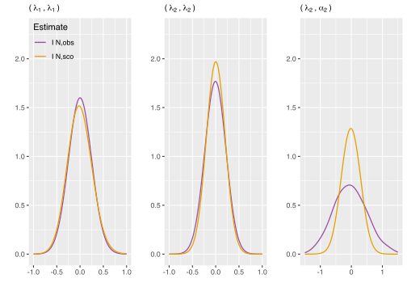
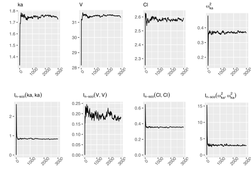

Computing an empirical Fisher information matrix estimate in latent variable models through stochastic approximation
ISSN 2824-7795
Authors
Affiliation
Maud Delattre
Université Paris-Saclay, INRAE, MaIAGE, 78350, Jouy-en-Josas, France
Estelle Kuhn
Université Paris-Saclay, INRAE, MaIAGE, 78350, Jouy-en-Josas, France
Published
July 10, 2023
Keywords
Model-based standard error, moment estimate, Fisher identity, stochastic approximation algorithm
Status
draft
Abstract
The Fisher information matrix (FIM) is a key quantity in statistics. However its exact computation is often not trivial. In particular in many latent variable models, it is intricated due to the presence of unobserved variables. Several methods have been proposed to approximate the FIM when it can not be evaluated analytically. Different estimates have been considered, in particular moment estimates. However some of them require to compute second derivatives of the complete data log-likelihood which leads to some disadvantages. In this paper, we focus on the empirical Fisher information matrix defined as an empirical estimate of the covariance matrix of the score, which only requires to compute the first derivatives of the log-likelihood. Our contribution consists in presenting a new numerical method to evaluate this empirical Fisher information matrix in latent variable model when the proposed estimate can not be directly analytically evaluated. We propose a stochastic approximation estimation algorithm to compute this estimate as a by-product of the parameter estimate. We evaluate the finite sample size properties of the proposed estimate and the convergence properties of the estimation algorithm through simulation studies.
1 Introduction
The Fisher information matrix (FIM) is a key quantity in statistics as it is required for examples for evaluating asymptotic precisions of parameter estimates, for building optimality criteria in experimental designs, for computing Wald test statistics or classical asymptotic distributions in statistical testing (Van der Vaart A. W. 2000). It also appears more recently in post model selection inference (Charkhi A. and Claeskens G. 2018), in asymptotic distribution of the likelihood ratio test statistics when testing variance component in mixed models (Baey C., Cournède P.-H., and Kuhn E. 2019) or as a particular Riemannian metric on complex manifold (Le Brigant A., Preston S. C., and Puechmorel S. 2021). However its exact computation is often not trivial. This is in particular the case in many latent variables models, also called incomplete data models, due to the presence of the unobserved variables. Though these models are increasingly used in many fields of application, such as in ecophysiology (Technow F. et al. 2015), in genomic (Picard F. et al. 2007) or in ecology (Gloaguen P. et al. 2014). They especially allow a better consideration of the different variability sources and when appropriate, a more precise characterization of the known mechanisms at the origin of the data. When the FIM can not be exactly computed, people either approximate it numerically, for example by using Monte Carlo technics like developed in the R package MIXFIM (Riviere-Jourdan M.-K. and Mentre F. 2018) or focus on an estimate of the FIM. The probably most widely used is the observed FIM (Efron B. and Hinkley D. V. 1978). When it can not be directly computed in latent variable models, several methods have been proposed to approximate it. Among the most frequently used approaches are Monte-Carlo methods or iterative algorithms derived from the missing information principle (Orchard T. and Woodbury M. A. 1972). Indeed according to this principle, the observed Fisher information matrix can be expressed as the difference between two matrices corresponding to the complete information and the missing information due to the unobserved variables (see e.g.(McLachlan G.-J. and Krishnan T. 2008) chapter 4). It enables the development of alternative methods to compute the observed FIM: the Louis’s method (Louis T. A. 1982), combined with a Monte Carlo method or a stochastic approximation algorithm by (Delyon B., Lavielle M., and Moulines E. 1999), the Oakes method (Oakes D. 1999) or the supplemented Expectation Maximization algorithm (Meng X.-L. and Rubin D. B. 1991). However as the observed FIM involves the second derivatives of the observed log-likelihood, all these methods require to compute second derivatives of the complete data log-likelihood which leads to some disadvantages from a computational point of view. More recently, (Meng L. and Spall J. C. 2017) proposed an accelerated algorithm based on numerical first order derivatives of the conditional expectation of the log-likelihood. Another estimate is the empirical Fisher information matrix. This estimator of the FIM is defined as the moment estimate of the covariance matrix of the score. It is much less used than the observed Fisher information matrix. However it has a nice property since it is positive definite, which is not systematically the case for the latter and it is numerically more interesting because it only requires the calculation of the first derivatives of the log-likelihood.
In this paper, our contribution consists in presenting a new numerical method to evaluate the empirical FIM in latent variables model. Indeed, when the proposed estimate can not be directly analytically evaluated, we propose a stochastic approximation estimation algorithm to compute it, which provides this estimate of the FIM as a by-product of model parameter estimates.
The paper is organized as follows. In Section 2, we recall the three main FIM estimates and discuss their immediate properties. In Section 3, we give practical tools for the computation of the empirical Fisher information matrix in incomplete data models. In particular, we introduce a new stochastic approximation procedure based on the first derivatives of the complete log-likelihood only and state its asymptotic properties. In Section 4, we illustrate the finite sample size properties of both estimators and the convergence properties of the computation algorithm through simulations. The paper ends by a discussion.
2 Moment estimates of the Fisher information matrix
Let us consider a random vector Y taking value in \mathcal{Y}. Assume Y admits a density g(\cdot;\theta) with respect to a given common measure \mu, depending on some parameter \theta taking values in an open subset \Theta of \mathbb{R}^{d}, such that the log-likelihood function \log g is differentiable on \Theta and \|\partial_\theta \log g(y;\theta) (\partial_\theta \log g(y;\theta))^t\| is integrable with respect to g, where x^t stands for the transpose of a vector or a matrix x. Then, by definition (see (Lehmann E. L. and Casella G. 2006)), the Fisher information matrix is given for all \theta\in\Theta by:
I(\theta) = E_\theta\left[\partial_\theta \log g(Y;\theta) (\partial_\theta \log g(Y;\theta))^t \right].
\tag{1}
When this expression can not be analytically evaluated, people are interested in computing an estimate of the Fisher information matrix. Considering this expression, one can derive a first moment estimator of the Fisher information matrix based on a n-sample y=(y_1, \ldots, y_{n}) of independent observations:
I_{n,sco}(\theta,y) = \frac{1}{n} \sum_{i=1}^n I_{sco}(\theta,y_i) = \frac{1}{n} \sum_{i=1}^n \partial_\theta \log g(y_i;\theta) (\partial_\theta \log g(y_i;\theta))^t.
This estimate is indeed equal to the mean of the Gram matrices of the scores.
Moreover, we can get another expression for the Fisher information (see (Lehmann E. L. and Casella G. 2006)). If we assume that the set A=\{y, g(y;\theta)>0\} is independent of \theta, that for \mu-almost all y, g(y;\cdot) is differentiable on \Theta, and that the derivative with respect to \theta on the left side of \int g(y;\theta)d\mu(y)=1 \tag{2} can be obtained by differentiating under the integral sign, then the Fisher information matrix is given for all \theta\in\Theta by:
I(\theta) = V_\theta\left[\partial_\theta \log g(Y;\theta) \right].
\tag{3}
One can also derive a second estimate from this expression defined as
I_{n,cov}(\theta,y) = \frac{1}{n} \sum_{i=1}^n \partial_\theta \log g(y_i;\theta) (\partial_\theta \log g(y_i;\theta))^t-\bar{s}(\theta,y)\bar{s}(\theta,y)^t,
where \bar{s}(\theta,y)=\frac{1}{n}\sum_{i=1}^n \partial_\theta \log g(y_i;\theta) (see e.g.(Scott W.-A. 2002)). We emphasize here that the terminology “empirical Fisher information matrix” is used in the literature for both estimates (see e.g.(Kunstner F., Hennig P., and Balles L. 2019)).
Moreover if additionally the second derivative with respect to \theta of \log g(y;\theta) exists for all y and \theta and the second derivative with respect to \theta of the left side of Equation 2 can be obtained by differentiating twice under the integral sign (see (Lehmann E. L. and Casella G. 2006)), we have
I(\theta) = - E_\theta\left[\partial_\theta^2 \log g(Y;\theta) \right].
\tag{4}
Considering this third expression, we can derive another moment estimator of the Fisher information matrix based on a n-sample (y_1, \ldots, y_{n}) of observations, called the observed Fisher information matrix defined as:
I_{n,obs}(\theta,y) = \frac{1}{n}\sum_{i=1}^n I_{obs}(\theta,y_i) = - \frac{1}{n} \sum_{i=1}^n \partial_\theta^2 \log g(y_i;\theta).
Some detailed discussion about the three estimators above can be found in (Scott W.-A. 2002).
Remark. We emphasize that the estimate I_{n,sco}(\theta,y) is always positive semi-definite, since it is a mean of Gram matrices, contrary to the others estimates I_{n,obs}(\theta,y) and I_{n,cov}(\theta,y). Moreover assuming n sufficiently large allows to prove positive definiteness of I_{n,sco}(\theta,y). Consider for any nonzero vector x the quantity x^t I_{n,sco}(\theta,y) x. We have that x^t I_{n,sco}(\theta,y) x = ( \sum_{i=1}^n x^t \partial_{\theta} \log g(y_i;\theta) \partial_{\theta} \log g(y_i;\theta)^t x )/n= \sum_{i=1}^n (x^t \partial_{\theta} \log g(y_i;\theta))^2/n. Thus, x^t I_{n,sco}(\theta,y) x=0 implies that x^t \partial_{\theta} \log g(y_i;\theta)=0 for all 1 \leq i \leq n. If n is sufficiently large, there exist d indexes i_1, ..., i_d such that the family of vectors \{\partial_{\theta} \log g(y_{i_l};\theta), 1 \leq l \leq d\} is linearly independent. Thus this implies that x=0 leading to the results.
Remark. The asymptotical properties of the estimates I_{n,sco}(\theta,y) and I_{n,obs}(\theta,y) are straighforward when considering independent and identically distributed sample (y_1, \ldots, y_{n}). In particular, assuming standard regularity conditions on g, it follows directly from the central limit theorem that I_{n,sco}(\theta,y) and I_{n,obs}(\theta,y) are asymptotically normal. If the variables Y_1, \ldots, Y_{n} are independent not identically distributed, for example if their distributions depend on some individual covariates which is often the case in practice, we can also get asymptotic properties for the estimates assuming more strengthed reguarity conditions by applying for example the Kolmogorov criterion (see e.g.(Feller W. 1968)) for the consistency and the Lindeberg theorem for the normality result (see theorem 27.2 of (Billingsley P. 2013)).
Remark. Since both estimators I_{n,sco}(\theta,y) and I_{n,obs}(\theta,y) are moment estimates of I(\theta), they are unbiased for all \theta \in \Theta. This is not the case for I_{n,cov}(\theta,y). Regarding the variance, none of both estimators is better than the other one. This can be highlighted through the following examples. First consider a Gaussian sample with unknown expectation and fixed variance. Then, the variance of the estimator I_{n,obs}(\theta,y) is zero whereas the variance of the estimator I_{n,sco}(\theta,y) is positive. Second consider a centered Gaussian sample with unknown variance. Then, the variance of I_{n,sco}(\theta,y) is smaller than the variance of I_{n,obs}(\theta,y). Therefore, none of both estimators is more suitable than the other in general from this point of view.
3 Computing the estimator I_{n,sco}(\theta) in latent variable model
Let us consider independent random variables Y_1, \ldots, Y_{n}. Assume in the sequel that there exist independent random variables Z_1, \ldots, Z_{n} taking values in \mathcal{Z} and a measure \lambda on \mathcal{Z} such that for each 1 \leq i \leq n, the random vector (Y_i,Z_i) admits a parametric probability density function denoted by f parametrized by \theta \in \Theta with respect to \mu \times \lambda on \mathcal{Y}\times\mathcal{Z}. We present in this section dedicated tools to compute the estimator I_{n,sco}(\theta) in latent variable model when it can not be evaluated analytically.
3.1 Analytical expressions in latent variable models
In latent variable models, the estimator I_{n,sco}(\theta,y) can be expressed using the conditional expectation as stated in the following proposition.
Proposition 1 Assume that for all y and all \theta \in \Theta the function f(y,.;\theta) is integrable with respect to \lambda, that for all y and for \lambda-almost all z the function f(y,z;\cdot) is differentiable on \Theta, that there exists a mesurable function m such that \int m(z) \lambda(dz)< \infty and for all \theta \in \Theta and for \lambda-almost all z|\partial_\theta f(y,z;\theta)|\leq m(z). Then for all \theta \in \Theta and all n \in \mathbb{N}^*:
where \mathrm{E}_{Z|Y;\theta} denotes the expectation under the law of Z conditionally to Y.
We apply the classical Fisher identity (Fisher R.A. 1925) to establish the equality stated in Proposition 1. We refer to Proposition 100 of (Cappé O., Moulines E., and Rydén T. 2005) for the statement of the Fisher identity. This statement is indeed in the same spirit as the well-known Louis formulae for the observed Fisher information matrix estimate (Louis T. A. 1982). The result follows directly.
Remark. In some specific cases the conditional expectations involved in the previous proposition admit exact analytical expressions for example in mixture models which are developed in Section 4 in some simulation studies.
3.2 Computing I_{n,sco}(\theta) using stochastic approximation algorithm
When exact computation of the estimator I_{n,sco}(\theta) is not possible for all \theta\in\Theta, we propose to evaluate its value by using a new stochastic algorithm which provides the estimate I_{n,sco}(\bar{\theta}_{ML}) as a by-product of the maximum likelihood estimate \bar{\theta}_{ML}. More precisely we provide three algorithms: a first one in the curved exponential family context which requires to simulate the latent variable from a transition kernel of an ergodic Markov chain and assumes less strength assumptions to get theoretical convergence result thanks to a truncation on random boundaries step, a second one in the curved exponential family context which does not include this additional projection step but requires more strength assumptions to ensure theoretical convergence. This second one and the related results are presented in Appendix. Finally we provide a third algorithm dedicated to general latent variables models without any theoretical results as it is usually the case for such kind of methods (see Section 3.2.3).
3.2.1 Description of the algorithm with truncation on random boundaries in curved exponential family model
We develop an extension of the stochastic approximation Expectation Maximization algorithm coupled with a Monte Carlo Markov Chain studied by (Allassonnière S., Kuhn E., and Trouvé A. 2010) which allows to compute simultaneously the maximum likelihood estimate and the FIM estimate proposed in the previous section. We assume in this section that all the individual complete log-likelihoods belong to the curved exponential family (see (Bickel P. J. and Doksum K. A. 2015)) for stating the theoretical results. As our estimate involves individual conditional expectations, we have to consider an extended form of sufficient statistics for the model at the individual level. Indeed, it is necessary to compute stochastic approximation of each individual sufficient statistic at individual level since there are required to be able to compute the proposed FIM estimate. This is the main difference with the usual algorithm. Therefore we introduce the following notations and assumptions.
The individual complete data likelihood function is given for all 1 \leq i \leq n by:
f_i(z_i;\theta) = \exp\left(-\psi_i(\theta) + \left<S_i(z_i),\phi_i(\theta)\right>\right),
\tag{6} where \left<\cdot,\cdot\right> denotes the scalar product, S_i is a function on \mathbb{R}^{d_i} taking its values in a subset \mathcal{S}_i of \mathbb{R}^{m_i}.
Let us denote for all 1 \leq i \leq n by L_i the function defined on \mathcal{S}_i \times \Theta by L_i(s_i; \theta)\triangleq - \psi_i(\theta) + \left<s_i,\phi_i(\theta)\right> and by L: \mathcal{S} \times \Theta \to \mathbb{R} the function defined as L(s,\theta)=\sum_i L_i(s_i; \theta) with \mathcal{S}=\prod_i \mathcal{S}_i and s=(s_1,\ldots,s_n). For sake of simplicity, we omitted all dependency on the observations (y_i)_{1 \leq i \leq n} since the considered stochasticity relies here on the latent variables.
Finally let us denote by (\gamma_k)_{k \geq 1} and (\varepsilon_k)_{k \geq 1} sequences of positive step sizes, by \mathrm{K} a compact set of \mathbb{R}^d with d=\sum d_i and by (\mathcal{K}_k) a sequence of increasing compact sets of \mathcal{S} such that \cup \mathcal{K}_k=\mathcal{S} and for all k\mathcal{K}_{k} \subset int(\mathcal{K}_{k+1} ).
Moreover we assume that there exists a function \widehat{\theta} : \ \mathcal{S} \rightarrow \Theta, such that \forall s \in \mathcal{S}, \ \ \forall \theta \in \Theta, \ \ L(s; \widehat{\theta}(s))\geq L(s; \theta).
Initialization step: Initialize arbitrarily for all 1 \leq i \leq ns_i^0 and \theta_0. Set \kappa_0=\zeta_0=\nu_0=0.
Repeat until convergence the three steps defined at iteration k by:
Simulation step: for 1 \leq i \leq n simulate a realization \bar{Z}_i from a parametric transition kernel \Pi_i of a Markov Chain parametrized by the current parameter value \theta_{k-1} and having the conditional distribution given the observations Y_i denoted by p_i as stationary distribution
Stochastic approximation step: compute the quantities for all 1 \leq i \leq n
\bar{s_i} = (1-\gamma_k)s_i^{k-1} +\gamma_k S_i(Z_i^k)
where (\gamma_k) is a sequence of positive step sizes satisfying \sum \gamma_k=\infty and \sum \gamma_k^2 <~\infty.
Truncation step: Let us denote \bar{Z}=(\bar{Z_i}), \bar{s}=(\bar{s_i}) and s=(s_i). If \bar{s}\in\mathcal{K}_{\kappa_{k-1}} and \|\bar{s}-s_{k-1} \|\leq \varepsilon_{\zeta_{k-1}}, then set (Z^k,s^k)=(\bar{Z},\bar{s}), \kappa_{k}=\kappa_{k-1}, \nu_{k}=\nu_{k-1}+1, \zeta_{k}=\zeta_{k-1}+1, else set (Z^k,s^k)=(\tilde{Z},\tilde{s})\in \mathrm{K}\times \mathcal{K}_0, \kappa_{k}=\kappa_{k-1}+1, \nu_{k}=0, \zeta_{k}=\zeta_{k-1}+ \Psi(\nu_{k-1}) where \Psi:\mathbb{N} \rightarrow \mathbb{Z} is a function such that \Psi(k)>k for any k and (\tilde{Z},\tilde{s}) chosen arbitrarily.
Maximisation step: update of the parameter estimator according to:
\theta_{k} = \arg \max_{\theta} \sum_{i=1}^n \left( -\psi_i(\theta) + \left<s_i^k,\phi_i(\theta)\right>\right) = \hat{\theta}(s^{k})
When convergence is reached, say at iteration K of the algorithm, evaluate the FIM estimator according to:
I_{n,sco}^K = \frac{1}{n} \sum_{i=1}^n \hat{\Delta}_i\left(s^{K}\right) \hat{\Delta}_i\left(s^{K}\right)^t
where \hat{\Delta}_i(s) = -\partial \psi_i(\hat{\theta}(s)) + \left<s_i,\partial \phi_i(\hat{\theta}(s))\right> for all s.
Remark. Note that the projection step which is done through the truncation procedure on random boundaries ensures the stability of the algorithm in particular for the theoretical analysis provided below. More details on this projection step are available in (Andrieu C., Moulines E., and Priouret P. 2005).
3.2.2 Theoretical convergence property
The theoretical result provided in this section for the sequence (\theta_k) generated by the algorithm with truncation on random boundaries is based on that of (Allassonnière S., Kuhn E., and Trouvé A. 2010). Indeed it established convergence guarantees for the FIM estimate obtained as a by-product of that for the MLE. To that purpose, in addition to the exponential family assumption for each individual likelihood, we also make the same type of regularity assumptions as those presented in (Allassonnière S., Kuhn E., and Trouvé A. 2010) at each individual level. These assumptions are detailed in the appendix section.
We establish our theoretical result for transition kernels (\Pi_i) corresponding to those of the random walk Metropolis Hastings algorithm (Jarner S. F. and Hansen E. 2000). We denote by (q_i) the family of symmetric densities used to generate the candidate with the proposal distribution. We introduce additional assumptions required to control the stochastic behavior of the algorithm:
(H1) There exists a constant M_0 such that
\begin{split}
\mathcal L=
\left\{s\in\mathcal S, \langle \nabla l(\hat\theta(s)), h(s)\rangle=0
\right\}\\
\subset
\{s\in\mathcal S, -l(\hat\theta(s))<M_0
\}.
\end{split}
In addition, there exist M_1\in(M_0,\infty] such that \{s\in\mathcal S, -l(\hat\theta(s)) \leq M_1 \} is a compact set.
(H2) For all s\in\mathcal{S}, \lim_{z \rightarrow \infty} n(z).\nabla_z \log p(z;\hat{\theta}(s))=-\infty and \lim_{z \rightarrow \infty} \sup n(z).m_s(z) <0 where where n(z)=z/|z| for z \neq 0, and m_s(z)=\nabla_z p(z;\hat{\theta}(s)) /p(z;\hat{\theta}(s)) with p(z;\theta)=\prod_i p_i(z_i;\theta).
(H3) The family \{q_i\}_{1\le i \le n} of symmetric densities is such that, for i = 1,\dots,n, there exist constants \eta_i > 0 and \delta_i <\infty such that q_i (z) > \eta_i for all |z|< \delta_i.
(H4) There exist C>1, \rho\in(0,1) and \theta_0 \in \Theta such that, for all z\in\mathbb{R}^d,
|S(z)|\le C p(z;\theta_0)^{-\rho}.
Remark. Assumption (H2) is standard and usually called super-exponentiality property in the literature (Jarner S. F. and Hansen E. 2000).
Remark. We established our results for transition kernels corresponding to random walk Metropolis Hastings algorithms which are of common use in practice. We emphasize that our result can be generalised to more general transition kernels by replacing our assumptions (H2) and (H3) by assumption (DRI) of (Andrieu C., Moulines E., and Priouret P. 2005) which is more generic. The latter can be verified in practice for more general transition kernels.
Theorem 1 Assume that (M1') and (M2'), (M3) to (M5), (SAEM1) and (SAEM2), (H1) to (H4) are fulfilled. Let us define \mathcal{L}=\{\theta \in\Theta, \partial_\theta l(y;\theta)=0\} the set of stationary points of the observed log-likelihood l defined as l(y;\theta)=\sum_{i=1}^n \log g(y_i;\theta). Then, for all \theta_0 \in \Theta, for fixed n \in \mathbb{N}^*, we get: \lim_k d(\theta_k,\mathcal{L})=0 a.s. and \lim_k d(I_{n,sco}^k,\mathcal{I})=0 a.s. where \mathcal{I}=\{I_{n,sco}(\theta), \theta \in \mathcal{L}\}.
Proof. Let us denote by S(Z)=(S_1(Z_1),\ldots,S_n(Z_n)) the sufficient statistics of the model we consider in our approach. Let us also define H(Z,s)=S(Z)-s and h(s)=\mathrm{E}_{Z|Y;\hat{\theta}(s)}(S(Z))-s. The proof is composed of two steps following for example the lines of (Allassonnière S., Kuhn E., and Trouvé A. 2010). First we establish the almost sure convergence of the sequence (s_k) generated by the algorithm toward the zero of the function h. Second we deduce the almost sure convergence of the sequences (\theta_k) and (I_{n,sco}^k) toward the set of critical points of the observed log-likelihood and the set \mathcal{I} respectively.
To prove the first step we apply Theorem 5.5 of (Andrieu C., Moulines E., and Priouret P. 2005). Therefore we have to verify that their four conditions denoted (A1) to (A4) are fulfilled. Our proof will follow the same global strategy as for example the one of Theorem 1 in (Kuhn E., Matias C., and Rebafka T. 2020). We get first that condition (A1) is satisfied by applying Lemma 2 of (Delyon B., Lavielle M., and Moulines E. 1999). Indeed our assumptions (M1') and (M2') imply that assumptions (M1) and (M2) of (Delyon B., Lavielle M., and Moulines E. 1999) are satisfied. These assumptions (M1') and (M2') focus on expressions and regularity properties of the individual likelihood functions and the corresponding sufficient statistics for each index i \in \{1,\ldots,n\}. The implication above follows by linearity of the log-likelihood function. Then we get that assumptions (H1), (M1)-(M5), (SAEM2) ensured that condition (A1) is satisfied. To prove assumptions (A2) and (A3), we will follow the strategy of (Allassonnière S., Kuhn E., and Trouvé A. 2010) to handle the difficulty of finding a common drift function V for the family of posterior distributions indexed by s \in \mathcal{S}. Therefore we will construct first a family of drift functions (V_s) using Proposition 6.1 of (Andrieu C., Moulines E., and Priouret P. 2005), which stated drift conditions, called (DRI), easy to very in practice. To prove condition (DRI1) for each kernels, we use Theorem 4.1 and Theorem 4.3 of (Jarner S. F. and Hansen E. 2000) which stated that assumptions (H2),(H3) and (H4) imply that Equations (6.1) and (6.3) of (DRI1) are satisfied with m=1 and V_s(z)= p(z;\hat{\theta}(s))^{- \rho} with \rho given by (H4). Then the common drift function is defined by V(z)= p(z;\theta_0)^{- \rho} using assumption (H4). Thus for any compact \mathcal{K} of \Theta, there exist constants c_{\mathcal{K}}>0 and C_{\mathcal{K}}>0 such that for all \theta \in \mathcal{K} and for all z, c_{\mathcal{K}} V(z)\leq p(z;\hat{\theta}(s))^{- \rho} \leq C_{\mathcal{K}}V(z). Therefore Equations (6.1) and (6.3) are satisfied for this common drift function V. Equation (6.2) follows also from Theorem 2.1 of (Jarner S. F. and Hansen E. 2000) which concludes the proof of (DRI1). The first part of (DRI2) is ensured by assumption (H4). The second part is satisfied directly with Lipschitz exponent \beta equal to 1 in our case. Finally assumption (DRI3) is satisfied also with \beta=1 in our framework. This proof is obtained by using the usual strategy of splitting the whole space in four parts depending on the acceptance region and on the rejection region (see the proof of Lemma 4.7 in (Fort G. et al. 2015) for example) and the fact that the function \hat\theta is twice continuously differentiable. Finally assumption (SAEM1) allows to choose a sequence (\varepsilon_k) such that (A4) is satisfied (see constructive details in (Andrieu C., Moulines E., and Priouret P. 2005) after the statement of assumption (A4)). This concludes the proof of the first step.
The function \hat\theta being continuous, we get that \lim_k d(\theta_k,\mathcal{L})=0 applying Lemma 2 of (Delyon B., Lavielle M., and Moulines E. 1999). Moreover we get that for 1 \leq i \leq n, each sequence (s_i^k) converges almost surely toward \mathrm{E}_{Z_i|Y_i;\theta} (S_i(Z_i) ). Since assumption (M2') ensures that for all 1 \leq i \leq n the functions \psi_i and \phi_i are twice continuously differentiable and assumption (M5) ensures that the function \hat{\theta} is continuously differentiable, the function \Phi_n defined by \Phi_n(s^{k})=\frac1{n}\sum_{i=1}^n \hat{\Delta}_i(s^{k})\hat{\Delta}_i(s^{k}) is continuous. Therefore we get that \lim_k d(I_{n,sco}^k,\mathcal{I})=0 which concludes the whole proof.
3.2.3 Description of the algorithm for general latent variables models
In general settings, the SAEM algorithm can yet be applied to approximate numerically the maximum likelihood estimate of the model parameter. Nevertheless there are no more theoretical guarantees of convergence for the algorithm. However we propose an extended version of our algorithm which allows to get an estimate of the Fisher information matrix as a by-product of the estimation algorithm.
Initialization step: Initialize arbitrarily \Delta_i^0 for all 1 \leq i \leq n, Q_0 and \theta_0.
Repeat until convergence the three steps defined at iteration k by:
Simulation step: for 1 \leq i \leq n simulate a realization Z_i^k direct from the conditional distribution given the observations Y_i, denoted by p_i, or from a transition kernel of an ergodic Markov Chain having p_i as stationary distribution, using the current parameter \theta_{k-1}.
Stochastic approximation step: compute the quantities for all 1 \leq i \leq n
Q_{k}(\theta) = (1-\gamma_k)Q_{k-1}(\theta)+\gamma_k \sum_{i=1}^n \log f(y_i,Z_i^k;\theta)
\Delta_i^{k} = (1-\gamma_k)\Delta_i^{k-1} +\gamma_k \partial_\theta \log f(y_i,Z_i^k;\theta_{k-1})
Maximisation step: update of the parameter estimator according to:
\theta_{k} = \arg \max_{\theta} Q_{k}(\theta).
When convergence is reached, say at iteration K of the algorithm, evaluate the FIM estimator according to:
I_{n,sco}^K = \frac{1}{n} \sum_{i=1}^n \Delta_i^K (\Delta_i^K )^t.
We illustrate through simulations in a nonlinear mixed effects model the performance of this algorithm in Section 4.2.
4 Simulation study
4.1 Asymptotic properties of the estimators I_{n,sco}(\theta) and I_{n,obs}(\theta)
In this section, we investigate the properties of the estimators I_{n,sco}(\theta) and I_{n,obs}(\theta) when the sample size n grows.
4.1.1 Simulation settings
First we consider the following linear mixed effects model y_{ij} = \beta + z_{i} + \varepsilon_{ij}, where y_{ij} \in \mathbb{R} denotes the j^{th} observation of individual i, 1\leq i \leq n, 1\leq j \leq J, z_i \in \mathbb{R} the unobserved random effect of individual i and \varepsilon_{ij} \in \mathbb{R} the residual term. The random effects (z_{i}) are assumed independent and identically distributed such that z_{i} \underset{i.i.d.}{\sim} \mathcal{N}(0,\eta^2), the residuals (\varepsilon_{ij}) are assumed independent and identically distributed such that \varepsilon_{ij} \underset{i.i.d.}{\sim} \mathcal{N}(0,\sigma^2) and the sequences (z_i) and (\varepsilon_{ij}) are assumed mutually independent. Here, the model parameters are \theta = (\beta, \eta^2, \sigma^2). We set \beta=3, \eta^2=2, \sigma^2=5 and J=12.
Second we consider the following Poisson mixture model where the distribution of each observation y_i, 1\leq i \leq n, depends on a state variable z_i which is latent leading to y_i|z_i=k \sim \mathcal{P}(\lambda_k) with P(z_i=k) = \alpha_k and \sum_{k=1}^{K} \alpha_k = 1. The model parameters are \theta=(\lambda_1,\ldots,\lambda_K,\alpha_1,\ldots,\alpha_{K-1}). For the simulation study, we consider a mixture of K=3 components, and the following values for the parameters \lambda_1=2, \lambda_2=5, \lambda_3=9, \alpha_1=0.3 and \alpha_2=0.5.
For each model, we generate M=500 datasets for different sample sizes n \in \left\{20,100,500 \right\}. As a first step, we assume that the true parameter values, denoted by \theta^{\star}, are known in order to investigate the asymptotic properties of both I_{n,sco} and I_{n,obs} without adding extra noise induced by the estimation of the parameters. Hence, for each value of n and for each 1 \leq m \leq M, we derive I_{n,sco}^{(m)}(\theta^{\star}) and I_{n,obs}^{(m)}(\theta^{\star}). The estimators I_{n,sco}(\theta^{\star}) and I_{n,obs}(\theta^{\star}) can be computed explicitly in both models by applying formula Equation 5 and Louis’ formula (Louis T. A. 1982) (see R functions provided in the Appendix section). We then compute the empirical bias and the root mean squared deviation of each component (\ell,\ell') of the estimated matrix as:
\frac{1}{M} \sum\limits_{m=1}^{M} I_{n,sco,\ell,\ell'}^{(m)}(\theta^\star) - I_{\ell,\ell'}(\theta^\star) \; \; \; \mathrm{and} \; \; \; \sqrt{\frac{1}{M} \sum\limits_{m=1}^{M} \left(I_{n,sco,\ell,\ell'}^{(m)}(\theta^\star) - I_{\ell,\ell'}(\theta^\star)\right)^2}.
In the previous quantities, I(\theta^\star) is explicit in the linear mixed effects model and approximated by a Monte-Carlo estimation based on a sample of size 10^8 in the Poisson mixture model. The results are presented in Table 1 and Table 2 for the linear mixed effects model and in Table 3 and Table 4 for the mixture model. In a second step, we use the linear mixed effects model to look at what happens when the parameter \theta is unknown and the estimation of the Fisher information matrix requires to compute an estimate \hat{\theta}_n. We use the datasets simulated with n=500 and we compute the M=500 asymptotic confidence intervals of the three model parameters. We then deduce empirical coverage rates for the following nominal rates 1-\alpha \in \{0.90, 0.95, 0.99\} by using the diagonal terms of either the inversed I_{n,sco}^{(m)}(\theta^{\star}) (resp. I_{n,obs}^{(m)}(\theta^{\star})) or the inversed I_{n,sco}^{(m)}(\hat{\theta}_n) (resp. I_{n,obs}^{(m)}(\hat{\theta}_n)). The results are depicted in Table 5 and Table 6.
Code
## 1- R script for studying the asymptotic properties of Iobs and Isco in the ## linear mixed effects model## -----------------------------------------------------------------------------library(lme4)nsim <-500# number of replicatesseq.n <-c(20,100,500) # number of individuals j <-12# number of observations per individual## parameter valuesbeta <-3sigma2 <-5eta2 <-2theta.true <-matrix(c(beta,eta2,sigma2),ncol=1)## R objects to store estimationsresIobs.theta.true <-array(NA,dim=c(3,3,nsim,length(seq.n)))resIsco.theta.true <-array(NA,dim=c(3,3,nsim,length(seq.n)))resIobs.theta.est <-array(NA,dim=c(3,3,nsim,length(seq.n)))resIsco.theta.est <-array(NA,dim=c(3,3,nsim,length(seq.n)))EstF11.true <-c()EstF22.true <-c()EstF33.true <-c()EstF12.true <-c()EstF13.true <-c()EstF23.true <-c()EstF11.est <-c()EstF22.est <-c()EstF33.est <-c()EstF12.est <-c()EstF13.est <-c()EstF23.est <-c()beta.est <-c()eta2.est <-c()sigma2.est <-c()## loop executing the nsim replicates of the experimentfor (l in1:length(seq.n)){ n <- seq.n[l] beta.est.n <-c() eta2.est.n <-c() sigma2.est.n <-c()for (k in1:nsim){## data simulation random <-rnorm(n,0,sqrt(eta2)) residual <-rnorm(n*j,0,sqrt(sigma2)) randompop <-rep(random,j) id <-rep(seq(1,n),j) obs <- beta+randompop+residual datamat <-matrix(obs,n,j)## evaluation of the FIM estimators in the true parameter values resIobs.theta.true[,,k,l] <-Iobs_LMM(datamat,beta,sigma2,eta2) resIsco.theta.true[,,k,l] <-Isco_LMM(datamat,beta,sigma2,eta2)## evaluation of the FIM estimators in the estimated parameter values est.mle <-lmer(obs~(1|id),REML = F) variances <-as.data.frame(VarCorr(est.mle)) beta.est.n <-c(beta.est.n,est.mle@beta) eta2.est.n <-c(eta2.est.n,variances[1,'vcov']) sigma2.est.n <-c(sigma2.est.n,variances[2,'vcov']) resIobs.theta.est[,,k,l] <-Iobs_LMM(datamat,est.mle@beta, variances[2,'vcov'], variances[1,'vcov']) resIsco.theta.est[,,k,l] <-Isco_LMM(datamat,est.mle@beta, variances[2,'vcov'], variances[1,'vcov']) } EstF11.true <-c(EstF11.true,c(resIsco.theta.true[1,1,,l], resIobs.theta.true[1,1,,l])) EstF22.true <-c(EstF22.true,c(resIsco.theta.true[2,2,,l], resIobs.theta.true[2,2,,l])) EstF33.true <-c(EstF33.true,c(resIsco.theta.true[3,3,,l], resIobs.theta.true[3,3,,l])) EstF12.true <-c(EstF12.true,c(resIsco.theta.true[1,2,,l], resIobs.theta.true[1,2,,l])) EstF13.true <-c(EstF13.true,c(resIsco.theta.true[1,3,,l], resIobs.theta.true[1,3,,l])) EstF23.true <-c(EstF23.true,c(resIsco.theta.true[2,3,,l], resIobs.theta.true[2,3,,l])) EstF11.est <-c(EstF11.est,c(resIsco.theta.est[1,1,,l], resIobs.theta.est[1,1,,l])) EstF22.est <-c(EstF22.est,c(resIsco.theta.est[2,2,,l], resIobs.theta.est[2,2,,l])) EstF33.est <-c(EstF33.est,c(resIsco.theta.est[3,3,,l], resIobs.theta.est[3,3,,l])) EstF12.est <-c(EstF12.est,c(resIsco.theta.est[1,2,,l], resIobs.theta.est[1,2,,l])) EstF13.est <-c(EstF13.est,c(resIsco.theta.est[1,3,,l], resIobs.theta.est[1,3,,l])) EstF23.est <-c(EstF23.est,c(resIsco.theta.est[2,3,,l], resIobs.theta.est[2,3,,l])) beta.est <-c(beta.est,rep(beta.est.n,2)) eta2.est <-c(eta2.est,rep(eta2.est.n,2)) sigma2.est <-c(sigma2.est,rep(sigma2.est.n,2))}DataRes <-data.frame(EstF11.true=EstF11.true, EstF22.true=EstF22.true, EstF33.true=EstF33.true, EstF12.true=EstF12.true, EstF13.true=EstF13.true, EstF23.true=EstF23.true,EstF11.est=EstF11.est, EstF22.est=EstF22.est, EstF33.est=EstF33.est, EstF12.est=EstF12.est, EstF13.est=EstF13.est, EstF23.est=EstF23.est,beta.est=beta.est, eta2.est=eta2.est, sigma2.est=sigma2.est,Estimate=rep(c(rep('I n,sco',nsim),rep('I n,obs',nsim)),length(seq.n)),n=rep(seq.n,each=nsim*2))save(DataRes,file="Rfiles/simusLMM.Rdata")
Code
## 2- R script for studying the asymptotic properties of Iobs and Isco in the ## Poisson mixture model - Monte-Carlo estimation of the true Fisher information ## matrix based on a very large sample ## -----------------------------------------------------------------------------nMC <-100000000alpha <-c(0.3,0.5) # mixture weights of the first K-1 components lambda <-c(2,5,9) # parameter values of the K Poisson distributions y <-sim_poisson_mixture(nMC,lambda,alpha)trueFIM <-fisher_estimation_poisson_mixture(y, nMC, lambda, alpha)trueFIM <- (trueFIM$Isco+trueFIM$Iobs)/2save(trueFIM,file='Rfiles/PoissonMixtureTrueFIM.Rdata')
Code
## 2- R script for studying the asymptotic properties of Iobs and Isco in the ## Poisson mixture model## -----------------------------------------------------------------------------nbsim <-500# number of replicatesalpha <-c(0.3,0.5) # mixture weights of the first K-1 components lambda <-c(2,5,9) # parameter values of the K Poisson distributionsseq.n <-c(20,100,500) # sample sizeIobs.theta.est <-array(NA,dim=c(5,5,nbsim))Isco.theta.est <-array(NA,dim=c(5,5,nbsim)) est.lambda <-matrix(NA,3,nbsim)est.alpha <-matrix(NA,2,nbsim)for (n in seq.n){for (j in1:nbsim){## Data simulation y <-sim_poisson_mixture(n,lambda,alpha)## Parameter estimation em.est <-em_poisson_mixture(y,3) est.lambda[,j] <- em.est[[1]] est.alpha[,j] <- em.est[[2]]## Computation of Isco and Iobs in the MLE value of the parameter res.theta.est <-fisher_estimation_poisson_mixture(y, est.lambda[,j], est.alpha[,j]) Iobs.theta.est[,,j] <- res.theta.est$Iobs Isco.theta.est[,,j] <- res.theta.est$Isco } ResSim <-list(n=n,Isco=Isco.theta.est,Iobs=Iobs.theta.est,lambda=lambda,alpha=alpha) filename <-paste('Rfiles/simusMixt_n',n,'.Rdata',sep="")save(ResSim,file=filename)}
4.1.2 Results
From Table 1, Table 2, Table 3 and Table 4, we observe that whatever the model and whatever the components of I_{n,sco}(\theta^{\star}) and I_{n,obs}(\theta^{\star}), the bias is very small even for small values of n. Note that in the linear mixed effects model the second derivative with respect to parameter \beta is deterministic, which explains why the bias and the dispersion of the estimations I_{n,obs}(\theta^{\star}) are zero for every value of n. The bias and the standard deviation decrease as n increases overall, which illustrates the consistency of both M-estimators. The distributions of the normalized estimations \sqrt{n} \left(I_{n,sco}^{(m)}(\theta^\star) - I(\theta^\star)\right) and \sqrt{n} \left(I_{n,obs}^{(m)}(\theta^\star) - I(\theta^\star)\right) are also represented when n=500 for some components of the matrices in Figure 1 (linear mixed effects model) and Figure 2 (Poisson mixture model). The empirical distributions have the shape of Gaussian distributions and illustrate the asymptotic normality of the two estimators. The numerical results highlight that neither I_{n,sco}(\theta^{\star}) nor I_{n,obs}(\theta^{\star}) is systematically better than the other one in terms of bias and asymptotic covariance matrix. In the same model, different behaviors can be observed depending on the components of the parameter vector.
Figure 1: Linear mixed effects model. Kernel density estimates of the normalized values of some components of the estimated Fisher information matrix based on the score (I_{n,sco}) and of the observed Fisher information matrix (I_{n,obs}) computed in the true parameter values from the 500 simulated datasets with n=500.

Figure 2: Poisson mixture model. Kernel density estimates of the normalized values of some components of the estimated Fisher information matrix based on the score (I_{n,sco}) and of the observed Fisher information matrix (I_{n,obs}) computed in the true parameter values from the 500 simulated datasets with n=500.
Table 1:
Linear mixed effects model. Empirical bias to the Fisher Information
matrix of In, sco
and In, obs
computed in the true parameter values for different values of n.
n=20
n=100
n=500
Isco
Iobs
Isco
Iobs
Isco
Iobs
(β,β)
0.00552
0.00000
0.00075
0.00000
-0.00064
0.00000
(η2,η2)
0.00325
0.00228
-0.00138
0.00031
-0.00122
-0.00027
(σ2,σ2)
-0.00314
0.00009
0.00002
0.00077
-0.00027
-0.00013
(β,η2)
-0.00241
0.00255
-0.00040
-0.00062
-0.00058
-0.00133
(β,σ2)
0.00360
0.00021
-0.00006
-0.00005
-0.00043
-0.00011
(η2,σ2)
-0.00050
0.00019
0.00013
0.00003
0.00002
-0.00002
Table 2:
Linear mixed effects model. Empirical squared deviation to the Fisher
Information matrix of In, sco
and In, obs
computed in the true parameter values for different values of n.
n=20
n=100
n=500
Isco
Iobs
Isco
Iobs
Isco
Iobs
(β,β)
0.13433
0.00000
0.05843
0.00000
0.02634
0.00000
(η2,η2)
0.07916
0.05559
0.02931
0.02418
0.01372
0.01090
(σ2,σ2)
0.08201
0.04177
0.03982
0.01946
0.01729
0.00819
(β,η2)
0.09730
0.05970
0.04380
0.02786
0.01898
0.01145
(β,σ2)
0.07115
0.00497
0.03100
0.00232
0.01378
0.00095
(η2,σ2)
0.02907
0.00463
0.01308
0.00201
0.00639
0.00091
Table 3:
Poisson mixture model. Empirical bias to the Fisher Information
matrix of In, sco
and In, obs
computed in the true parameter values for different values of n.
n=20
n=100
n=500
Isco
Iobs
Isco
Iobs
Isco
Iobs
(λ2,λ2)
0.00009
-0.00025
-0.00003
0.00025
0.00008
-0.00029
(λ3,λ3)
0.00005
0.00047
-0.00023
-0.00035
0.00008
0.00015
(α1,α1)
0.05981
0.05981
-0.04072
-0.04072
0.01849
0.01849
(α2,α2)
0.04756
0.04756
-0.04006
-0.04006
0.01205
0.01205
(λ2,λ3)
0.00009
0.00009
-0.00007
-0.00007
0.00002
0.00002
(λ3,α2)
-0.00220
0.00082
0.00284
-0.00061
-0.00077
0.00041
Table 4:
Poisson mixture model. Empirical squared deviation to the Fisher
Information matrix of In, sco
and In, obs
computed in the true parameter values for different values of n.
n=20
n=100
n=500
Isco
Iobs
Isco
Iobs
Isco
Iobs
(λ2,λ2)
0.00717
0.02238
0.00310
0.00996
0.00141
0.00463
(λ3,λ3)
0.01523
0.00872
0.00664
0.00403
0.00299
0.00167
(α1,α1)
1.20192
1.20192
0.52483
0.52483
0.23129
0.23129
(α2,α2)
1.05566
1.05566
0.46762
0.46762
0.20510
0.20510
(λ2,λ3)
0.00295
0.00295
0.00132
0.00132
0.00059
0.00059
(λ3,α2)
0.11013
0.03428
0.04614
0.01561
0.02137
0.00712
Table 5 and Table 6 show that the empirical coverage rates computed from I_{n,sco} and I_{n,obs} in the linear mixed effects model are close to the nominal values, which corroborates the relevance of both estimators. Moreover there is little difference between the results obtained when using I_{n,sco} or I_{n,obs} to estimate the Fisher information matrix. When the parameter value is unknown, the uncertainty related to the parameter estimation leads to a deterioration of the coverage rates. Still, this deterioration diminishes when n increases.
Table 5:
Linear mixed effects model. Comparison of the coverage rates computed
from both estimates of the Fisher information matrix in either the true
or the estimated parameter values when n=100.
1-α
Fisher est.
θ
β
η2
σ2
0.99
Isco
Known
0.992
0.98
0.984
Estimated
0.988
0.974
0.992
Iobs
Known
0.99
0.982
0.982
Estimated
0.986
0.972
0.988
0.95
Isco
Known
0.964
0.946
0.948
Estimated
0.944
0.936
0.944
Iobs
Known
0.96
0.944
0.948
Estimated
0.938
0.942
0.944
0.9
Isco
Known
0.904
0.914
0.876
Estimated
0.89
0.906
0.884
Iobs
Known
0.892
0.916
0.89
Estimated
0.882
0.89
0.872
Table 6:
Linear mixed effects model. Comparison of the coverage rates computed
from both estimates of the Fisher information matrix in either the true
or the estimated parameter values when n=500.
1-α
Fisher est.
θ
β
η2
σ2
0.99
Isco
Known
0.996
0.986
0.984
Estimated
0.996
0.986
0.992
Iobs
Known
0.996
0.986
0.984
Estimated
0.996
0.988
0.986
0.95
Isco
Known
0.952
0.954
0.952
Estimated
0.95
0.956
0.944
Iobs
Known
0.952
0.956
0.952
Estimated
0.95
0.95
0.946
0.9
Isco
Known
0.922
0.914
0.906
Estimated
0.916
0.898
0.91
Iobs
Known
0.918
0.912
0.908
Estimated
0.914
0.888
0.912
4.2 Asymptotic properties of the stochastic approximation algorithm
We now investigate the properties of our algorithm with truncation on random boundaries in the curved exponential family when the number of iterations grows (Section 4.2.1) and the good performance of its extended version in more general latent variable models (Section 4.2.2). We also present a short comparison with existing methods (Section 4.2.3).
4.2.1 In curved exponential family models
We consider the following nonlinear mixed effects model which is widely used in pharmacokinetics for describing the evolution of drug concentration over time:
y_{ij}= g_i(t_{ij},z_i) + \varepsilon_{ij},
\tag{7} where z_i=(\log ka_i, \log Cl_i, \log V_i)' are individual random parameters such that \log ka_{i} = \log(ka) + \eta_{i,1}, \log Cl_{i} = \log(Cl) + \eta_{i,2}, \log V_i = \log(V) + \eta_{i,3}, and g_i(t_{ij},z_i) = \frac{d_i ka_{i}}{V_i ka_{i}-Cl_{i}}\left[e^{-\frac{Cl_{i}}{V_i} t_{ij}} - e^{-ka_{i} t_{ij}}\right].
For all 1 \leq i \leq n and all 1\leq j \leq J, y_{ij} denotes the measure of drug concentration on individual i at time t_{ij}, d_i the dose of drug administered to individual i, and V_i, ka_i and Cl_i respectively denote the volume of the central compartment, the drug’s absorption rate constant and the drug’s clearance of individual i. The terms \eta_{i} = (\eta_{i,1},\eta_{i,2},\eta_{i,3})' \in \mathbb{R}^3 are unobserved random effects which are assumed independent and identically distributed such that \eta_i \underset{i.i.d.}{\sim} \mathcal{N}(0,\Omega), where \Omega = \mathrm{diag}(\omega^2_{ka},\omega^2_{Cl},\omega^2_{V}), the residuals (\varepsilon_{ij}) are assumed independent and identically distributed such that \varepsilon_{ij} \underset{i.i.d.}{\sim} \mathcal{N}(0,\sigma^2) and the sequences (\eta_i) and (\varepsilon_{ij}) are assumed mutually independent. Here, the model parameter is \theta = (ka,V,Cl,\omega^2_{ka},\omega^2_{V},\omega^2_{Cl},\sigma^2).
In this model, as in a large majority of nonlinear mixed effects models, the likelihood does not have any analytical expression. As a consequence, neither the Fisher Information Matrix, nor the estimators I_{n,sco}(\theta), I_{n,obs}(\theta) have explicit expressions. However, as the complete data log-likelihood is explicit, stochastic approximations of I_{n,sco}(\theta), I_{n,obs}(\theta) can be implemented. Note moreover that this model belongs to the curved exponential family as defined in Equation 6 with
\begin{aligned}
S_i(z_i) = \left(\sum_{j=1}^{J} (y_{ij} g_i(t_{ij}, z_i)), (\log ka_i), (\log Cl_i), (\log V_i), (\log ka_i)^2, (\log Cl_i)^2, (\log V_i)^2 \right)'\\
\phi_i(\theta) = \left(\frac{1}{2\sigma^2},\frac{\log ka}{\omega_{ka}^2}, \frac{\log Cl}{\omega_{Cl}^2}, \frac{\log V}{\omega_{V}^2},-\frac{1}{2\omega_{ka}^2},-\frac{1}{2\omega_{Cl}^2},-\frac{1}{2\omega_{V}^2}\right),\\
\psi_i(\theta) = \frac{1}{2}\left(\frac{(\log ka)^2}{\omega_{ka}^2} + \frac{(\log Cl)^2}{\omega_{Cl}^2} + \frac{(\log V)^2}{\omega_{V}^2}\right).
\end{aligned}
The algorithm described in Section 3.2.1 can therefore be easily implemented to estimate \theta and the Fisher information matrix simultaneously (see R function provided in the Appendix section).
We take the following values for the parameters V=31, ka=1.6, Cl=2.8, \omega^2_V=0.40, \omega^2_{ka}=0.40, \omega^2_{Cl}=0.40 and \sigma^2=0.75. We consider the same dose d_i=320 and the same observation times (in hours): 0.25,0.5, 1, 2, 3.5, 5, 7, 9, 12, 24 for all the individuals. We simulate one dataset with n=100 individuals under model specified by Equation 7. On this simulated dataset, we run M=500 times the stochastic approximation algorithm described in Section 3.2.1 for computing I_{n,sco}(\hat{\theta}) together with \hat{\theta} and the algorithm of (Delyon B., Lavielle M., and Moulines E. 1999) for computing I_{n,obs}(\hat{\theta}). We perform K=3000 iterations in total for each algorithm by setting \gamma_k=0.95 for 1 \leq k \leq 1000 (burn in iterations) and \gamma_k=(k-1000)^{-3/5} otherwise, \varepsilon_k=5.10^4\gamma_k^{2/5} and \mathcal{K}_{\kappa} = [-20-\kappa,20+\kappa]^6\times[0,5.10^4+\kappa]. At any iteration, we compute the empirical relative bias and the empirical relative standard deviation of each component (\ell,\ell') of I_{n,sco} defined respectively as:
\frac{1}{M} \sum\limits_{m=1}^{M} \frac{\widehat{I_{n,sco,\ell,\ell'}^{(k,m)}} - I_{n,sco,\ell,\ell'}^{\star}}{I_{n,sco,\ell,\ell'}^{\star}} \; \; \; \mathrm{and}
\; \; \; \sqrt{\frac{1}{M} \sum\limits_{m=1}^{M} \left(\frac{\widehat{I_{n,sco,\ell,\ell'}^{(k,m)}} - I_{n,sco,\ell,\ell'}^{\star}}{I_{n,sco,\ell,\ell'}^{\star}}
\right)^2}
where \widehat{I_{n,sco}^{(k,m)}} denotes the estimated value of I_{n,sco}(\hat{\theta}) at iteration k of the m^{th} algorithm. We compute the same quantities for I_{n,obs}. As the true values of I_{n,sco}^{\star}=I_{n,sco}(\theta^{\star}) and I_{n,obs}^{\star}=I_{n,obs}(\theta^{\star}) are not known, they are estimated by Monte-Carlo integration based on 10^5 iterations, including 5000 burnin, of a Metropolis-Hastings algorithm.
Code
## R script for studying the properties of the SAEM algorithm in the curved ## exponential family when the number of iterations grow. ## -----------------------------------------------------------------------------## 1- Data simulation# Sample characteristicsset.seed(3005)n <-100# number of subjectstimes <-c(0.25,0.5,1,2,3.5,5,7,9,12,24) # observation timesj <-length(times) # number of observations per subjectdose <-320# dose# True parameter valuesvpop <-31kapop <-1.6clpop <-2.8omega2v <-0.40omega2ka <-0.40omega2cl <-0.40sigma2 <-0.75# Simulation of the individual parametersvind <-exp(rnorm(n,log(vpop),sd=sqrt(omega2v)))kaind <-exp(rnorm(n,log(kapop),sd=sqrt(omega2ka)))clind <-exp(rnorm(n,log(clpop),sd=sqrt(omega2cl)))# Simulation of the observationsypred <-c()for (k in1:n){ ypred <-c(ypred,model1cptsim(cbind(kaind,vind,clind),k, times,dose))}y <- ypred +rnorm(n*j,0,sd=sqrt(sigma2))datasim <-data.frame(y=y,dose=rep(dose,n*j),time=rep(times,n),subject=kronecker(1:n, rep(1,j)))## 2- Numerical experiment## a- Evaluation of both estimators of the FIM using the saem algorithmnbsim <-500# Algorithmic settingsnbiterem <-3000nbiterburnin <-1000# Saving the nbsim resultsiscoarray <-array(0,dim=c(nbsim,7,7,nbiterem))iobsarray <-array(0,dim=c(nbsim,7,7,nbiterem))thetaest <-matrix(NA,7,nbsim)for (k in1:nbsim){set.seed(k*100+10) theta0 <-list(vpop=vpop*runif(1,0.8,1.2),kapop=kapop*runif(1,0.8,1.2),clpop=clpop*runif(1,0.8,1.2),omega2v=omega2v*runif(1,0.4,2),omega2ka=omega2ka*runif(1,0.4,2),omega2cl=omega2cl*runif(1,0.4,2),sigma2=sigma2*runif(1,0.4,2)) res <-saem(datasim, nbiterem, nbiterburnin, theta0) iscoarray[k,,,]<- res$isco iobsarray[k,,,]<- res$iobs thetaest[,k] <- res$thetaest[,nbiterem]}# b- Monte-Carlo evaluation of both estimates# These Monte-Carlo estimations are considered as the targets for the estimates# computed using the stochastic approximation algorithmnbMC <-10000nbMCburnin <-5000tm <-rowMeans(thetaest)thetaMean <-list(kapop=tm[1],vpop=tm[2],clpop=tm[3],omega2ka=tm[4],omega2v=tm[5],omega2cl=tm[6],sigma2=tm[7])FisherMC <-FIM_mc(datasim, nbMC, nbMCburnin, thetaMean)iscoMC <- FisherMC$iscoMCiobsMC <- FisherMC$iobsMC# Evaluation of the mean relative bias and of the mean relative standard errors# per iteration.biasIsco <-array(0,dim=c(7,7,nbsim,nbiterem))for (j in1:nbsim){for (k in1:nbiterem){ biasIsco[,,j,k] <- (iscoarray[j,,,k] - iscoMC)/iscoMC }}biasIobs <-array(0,dim=c(7,7,nbsim,nbiterem))for (j in1:nbsim){for (k in1:nbiterem){ biasIobs[,,j,k] <- (iobsarray[j,,,k] - iobsMC)/iobsMC }}rsdIsco <-array(0,dim=c(7,7,nbsim,nbiterem))for (j in1:nbsim){for (k in1:nbiterem){ rsdIsco[,,j,k] <- (iscoarray[j,,,k] - iscoMC)^2/iscoMC^2 }}rsdIobs <-array(0,dim=c(7,7,nbsim,nbiterem))for (j in1:nbsim){for (k in1:nbiterem){ rsdIobs[,,j,k] <- (iobsarray[j,,,k] - iobsMC)^2/iobsMC^2 }}MbiasIsco <-apply(biasIsco[,,,(nbiterburnin+1):nbiterem],c(1,2,4),mean)MbiasIobs <-apply(biasIobs[,,,(nbiterburnin+1):nbiterem],c(1,2,4),mean)MsdIsco <-apply(rsdIsco[,,,(nbiterburnin+1):nbiterem],c(1,2,4),mean)MsdIobs <-apply(rsdIobs[,,,(nbiterburnin+1):nbiterem],c(1,2,4),mean)save(MbiasIsco,file='Rfiles/ResNLMEexponentialBiasIsco.Rdata')save(MbiasIobs,file='Rfiles/ResNLMEexponentialBiasIobs.Rdata')save(MsdIsco,file='Rfiles/ResNLMEexponentialSdIsco.Rdata')save(MsdIobs,file='Rfiles/ResNLMEexponentialSdIobs.Rdata')load('Rfiles/ResNLMEexponentialBiasIsco.Rdata')load('Rfiles/ResNLMEexponentialBiasIobs.Rdata')load('Rfiles/ResNLMEexponentialSdIsco.Rdata')load('Rfiles/ResNLMEexponentialSdIobs.Rdata')MbiasIobs <- MbiasIobs[,,seq(1,2000,10)]MbiasIsco <- MbiasIsco[,,seq(1,2000,10)]MsdIobs <- MsdIobs[,,seq(1,2000,10)]MsdIsco <- MsdIsco[,,seq(1,2000,10)]save(MbiasIsco,file='Rfiles/ResNLMEexponentialBiasIsco.Rdata')save(MbiasIobs,file='Rfiles/ResNLMEexponentialBiasIobs.Rdata')save(MsdIsco,file='Rfiles/ResNLMEexponentialSdIsco.Rdata')save(MsdIobs,file='Rfiles/ResNLMEexponentialSdIobs.Rdata')
Figure 3: Non linear mixed effects model. Representation over iterations of the mean relative bias of the diagonal components of the estimated Fisher information matrix computed from the M=500 runs of the stochastic algorithm. Red line corresponds to I_{n,sco}(\theta) and blue line corresponds to I_{n,obs}(\theta). The burn-in iterations of the algorithm are not depicted.
Figure 4: Non linear mixed effects model. Representation over iterations of the mean relative standard error of the diagonal components of the estimated Fisher information matrix computed from the M=500 runs of the stochastic algorithm. Red line corresponds to I_{n,sco}(\theta) and blue line corresponds to I_{n,obs}(\theta). The burn-in iterations of the algorithme are not depicted
We observe that the bias and the standard deviations of the estimates of the components of both matrices decrease over iterations, and that for both estimates the bias is nearly zero when the convergence of the algorithm is reached. According to these simulation results, there is no evidence that one method is better than the other in terms of bias or standard deviation.
4.2.2 In general latent variable models
We use model specified by Equation 7 again, but we now consider that individual parameter V_i is fixed, i.e.V_i \equiv V\forall i = 1,\ldots,n. The model is no longer exponential in the sense of equation Equation 6. We must therefore use the general version of the stochastic approximation algorithm from Section 3.2.3 to compute I_{n,sco}(\hat{\theta}) (see R function provided in the Appendix section). We simulate 500 datasets according to this model and we estimate I_{n,sco}(\hat{\theta}) and \hat{\theta} for each one. We perform K=3000 iterations of the algorithm by setting \gamma_k=k^{-0.501}. We compute the 500 asymptotic confidence intervals of the model parameters, by using either the inversed I_{n,sco}(\hat{\theta}_k)’s or the inversed I_{n,obs}(\hat{\theta}_k)’s and then deduce from them empirical coverage rates.
Code
## R script for studying the relevance of the SAEM algorithm out of the curved ## exponential family ## -----------------------------------------------------------------------------## 1- Data simulation## Sample characteristicsn <-100# number of subjectstimes <-c(0.25,0.5,1,2,3.5,5,7,9,12,24) # observation timesj <-length(times) # number of observations per subjectdose <-320# dose## True parameter valuesvpop <-31kapop <-1.6clpop <-2.8omega2ka <-0.40omega2cl <-0.40sigma2 <-0.75## Estimationnbiterem <-3000# total number of iterationsnbiterburnin <-1000# number of burnin iterationsnbsim <-500# number of simulated datasets thetaest <-matrix(0,6,nbsim)isco.est <-array(0,dim=c(6,6,nbsim))iobs.est <-array(0,dim=c(6,6,nbsim))for (kk in1:nbsim){set.seed(kk*2500+10)## Simulation of individual parameters vi <-rep(vpop,n) kai <-exp(rnorm(n,log(kapop),sd=sqrt(omega2ka))) cli <-exp(rnorm(n,log(clpop),sd=sqrt(omega2cl)))## Simulation of the observations ypred <-c()for (k in1:n){ ypred <-c(ypred,model1cptsim(cbind(kai,vi,cli),k,times,dose)) } y <- ypred +rnorm(n*j,0,sd=sqrt(sigma2)) datasim <-data.frame(y=y,dose=rep(dose,n*j),time=rep(times,n),subject=kronecker(1:n, rep(1,j)))## Estimation theta0 <-list(vpop=vpop*runif(1,0.95,1.05),kapop=kapop*runif(1,0.8,1.2),clpop=clpop*runif(1,0.8,1.2),omega2ka=omega2ka*runif(1,0.4,2),omega2cl=omega2cl*runif(1,0.4,2),sigma2=sigma2*runif(1,0.4,2)) res <-saem_non_exp(datasim, nbiterem, nbiterburnin, theta0) thetaest[,kk] <- res$thetaest[,nbiterem] isco.est[,,kk] <- res$isco[,,nbiterem] iobs.est[,,kk] <- res$iobs[,,nbiterem] filename <-paste("Rfiles/ResNLMEnonexponential.Rdata",sep="") resNLMEnonExp <-list(thetaest=thetaest,isco=isco.est,iobs=iobs.est)save(resNLMEnonExp,file=filename)}
We obtain for the six parameters (ka,V,Cl,\omega^2_{ka},\omega^2_{Cl},\sigma^2) empirical covering rates of 0.96, 0.948, 0.948, 0.932, 0.948, 0.948 respectively for a nominal covering rate of 0.95. This highlights that our estimate accurately quantifies the precisions of parameter estimates. Note that empirical coverage rates computed from I_{n,obs} are similar (here 0.952, 0.93, 0.942, 0.924, 0.952, 0.946) but that the real advantage of our method is that it requires stochastic approximation only on the first-order derivatives of the complete log-likelihood, contrary to I_{n,obs} which requires deriving the complete log-likelihood at the second order and thus implies more complicated formulas since the model does not belong to the exponential family.
Convergence graphs obtained from a simulated data set are shown in Figure 5. Although theoretical guarantee is missing in non exponential models, the stochastic approximation algorithm proposed in Section 3.2.3 converges in practice on this example for both the estimation of the model parameters and the estimation of the Fisher information matrix.

Figure 5: Non linear mixed effects model. Convergence plot for some parameter estimates and for some diagonal components of I_{n,sco}(\hat{\theta}) over iterations of the stochastic approximation algorithm.
4.2.3 Comparison with other methods
To the best of our knowledge, although there exists contributions focusing on the estimation of the Fisher information matrix in latent variable models, there is currently no method based on the first derivatives of the log-likelihood. We compare to (Meng L. and Spall J. C. 2017) who proposed an iterative method based on numerical first order derivatives of the Q function that is computed at each E-step of the EM algorithm. The model used by (Meng L. and Spall J. C. 2017) in their simulation study is a mixture of two Gaussian distributions with unknown expectations \mu_1 and \mu_2, fixed variances equal to 1 and unknown proportion \pi. The model parameters are denoted by \theta=(\mu_1,\mu_2,\pi).
Code
## Numerical study in the Gaussian mixture model from (Meng and Spall, 2017)## This script computes the estimator Isco on a large number of simulated ## datasets of size n=750. # True paramater valuesprobtrue <-2/3# mixture proportionm1true <-3# mean of the first mixture proportionm2true <-0# mean of the second mixture proportion# Sample sizen <-750# Number of simulated datasetsnrep <-10000# Nominal rate for the computation of empirical coverage ratesrate <-0.95# Intermediary R objects to store the resultsrecouvprob <-0recouvm1 <-0recouvm2 <-0isco <-array(NA,dim=c(nrep,3,3))for (j in1:nrep){ y <-sim_gaussian_mixture(n,m1true,m2true,probtrue) est <-em_gaussian_mixture(y) iscoest <-fisher_estimation_gaussian_mixture(y,est$m1,est$m2,est$prob) ICinf <-c(est$prob,est$m1,est$m2) -qnorm(1-(1-rate)/2)*sqrt(diag(solve(iscoest))) ICsup <-c(est$prob,est$m1,est$m2) +qnorm(1-(1-rate)/2)*sqrt(diag(solve(iscoest)))if ((probtrue>=ICinf[1])&(probtrue<=ICsup[1])){recouvprob <- recouvprob +1}if ((m1true>=ICinf[2])&(m1true<=ICsup[2])){recouvm1 <- recouvm1 +1}if ((m2true>=ICinf[3])&(m2true<=ICsup[3])){recouvm2 <- recouvm2 +1} isco[j,,] <- iscoest}res <-list(isco=round(apply(isco,c(2,3),mean),3),recouvprob=recouvprob/nrep,recouvm1=recouvm1/nrep,recouvm2=recouvm2/nrep)save(res,file="Rfiles/ResGaussianMixture.Rdata")
We simulate 10000 datasets according to this Gaussian mixture model, using the same setting as (Meng L. and Spall J. C. 2017), i.e.n=750, \pi=2/3, \mu_1=3 and \mu_2=0. For each dataset k=1,\ldots,10000, we compute the parameter maximum likelihood estimate \hat{\theta}_k = (\hat{\pi}_k,\widehat{\mu_1}_k,\widehat{\mu_2}_k) with an EM algorithm and then we derive I_{n,sco}(\hat{\theta}_k) directly according to Equation 5 (see R function provided in the Appendix section) contrary to (Meng L. and Spall J. C. 2017) who used an iterative method. We compute the empirical mean of the 10000 estimated matrices leading to:
Comparison with the results of (Meng L. and Spall J. C. 2017) is delicate since their numerical illustration of their method is based on a single simulated dataset thus potentially sensitive to sampling variations. However, they provide an estimation of the Fisher information matrix from this unique dataset
I_{Meng} = \begin{pmatrix}
2591.3 & -237.9 & -231.8\\
-237.9 & 155.8 & -86.7\\
-231.8 & -86.7 & 394.5
\end{pmatrix}.
Our results are coherent with their ones. To check the reliability of our results, we then compute as above the 10000 asymptotic confidence intervals of the three model parameters. We obtain for the three parameters (\pi,\mu_1,\mu_2) empirical covering rates of 0.9477, 0.9499, 0.9523 respectively for a nominal covering rate of 0.95. Thus I_{n,sco} accurately quantifies the precisions of parameter estimates.
5 Conclusion and discussion
In this work, we address the estimation of the Fisher information matrix in general latent variable models. We focus on the empirical Fisher information matrix which is a moment estimate of the covariance matrix of the score. We propose stochastic approximation algorithms to compute this estimate when it can not be calculated analytically and establish theoretical convergence properties in the curved exponential family setting. We carry out a simulation study in mixed effects model and in a Poisson mixture model to compare the performances of several estimates, namely the considered empirical Fisher information matrix and the observed Fisher information matrix. We emphasize that the empirical FIM requires less regularity assumptions than the observed FIM. From a computational point of view, the implementation of the algorithm for evaluating the empirical FIM only involves the first derivatives of the log-likelihood, in contrary to the one for evaluating the observed FIM which involves the second derivatives of the log-likelihood.
The main perspective of this work is to adapt the procedure for statistical models whose derivatives of the log-likelihood have no tractable expressions, coupling the algorithm with numerical derivative procedures.
6 Appendix
6.1 Description of the algorithm without truncation on random boundaries in curved exponential family model
We provide here a simpler algorithm based on an extension of the stochastic approximation Expectation Maximization algorithm proposed by (Delyon B., Lavielle M., and Moulines E. 1999) using a simulation step performed from the conditional distribution and without truncation on random boundaries. Theoretical results are established assuming a stability condition which is usually quite difficult to check. However, this algorithm can be easily applied in practice.
Initialization step: Initialize arbitrarily for all 1 \leq i \leq ns_i^0 and \theta_0.
Repeat until convergence the three steps defined at iteration k by:
Simulation step: for 1 \leq i \leq n simulate a realization Z_i^k from the conditional distribution given the observations Y_i denoted by p_i using the current parameter value \theta_{k-1}.
Stochastic approximation step: compute the quantities for all 1 \leq i \leq n
s_i^{k} = (1-\gamma_k)s_i^{k-1} +\gamma_k S_i(Z_i^k)
where (\gamma_k) is a sequence of positive step sizes satisfying \sum \gamma_k=\infty and \sum \gamma_k^2 <~\infty.
Maximisation step: update of the parameter estimator according to:
\theta_{k} = \arg \max_{\theta} \sum_{i=1}^n \left( -\psi_i(\theta) + \left<s_i^k,\phi_i(\theta)\right>\right) = \hat{\theta}(s^{k})
When convergence is reached, say at iteration K of the algorithm, evaluate the FIM estimator according to:
I_{n,sco}^K = \frac{1}{n} \sum_{i=1}^n \hat{\Delta}_i\left(s^{K}\right) \hat{\Delta}_i\left(s^{K}\right)^t
where \hat{\Delta}_i(s) = -\partial \psi_i(\hat{\theta}(s)) + \left<s_i,\partial \phi_i(\hat{\theta}(s))\right> for all s.
Remark. In the cases where the latent variables can not be simulated from the conditional distribution, one can apply the extension coupling the stochastic algorithm with a Monte Carlo Markov Chain procedure as presented in (Kuhn E. and Lavielle M. 2004). All the following results can be extended to this case.
6.2 Theoretical convergence properties
The theoretical following results provided convergence guarantees for the FIM estimate obtained as a by-product of the MLE. Therefore they extend those of (Delyon B., Lavielle M., and Moulines E. 1999). To that purpose, in addition to the exponential family assumption for each individual likelihood, we also make the same type of regularity assumptions as those presented in (Delyon B., Lavielle M., and Moulines E. 1999) at each individual level. These regularity assumptions on the model are detailed at the end of the appendix section.
Theorem 2 Assume that (M1') and (M2'), (M3) to (M5) and (SAEM1) to (SAEM4) are fulfilled. Assume also that with probability 1 \mathrm{clos}(\{s_k\}_{k \geq 1}) is a compact subset of \mathcal{S}. Let us define \mathcal{L}=\{\theta \in\Theta, \partial_\theta l(y;\theta)=0\} the set of stationary points of the observed log-likelihood l defined as l(y;\theta)=\sum_{i=1}^n \log g(y_i;\theta). Then, for all \theta_0 \in \Theta, for fixed n \in \mathbb{N}^*, we get: \lim_k d(\theta_k,\mathcal{L})=0 and \lim_k d(I_{n,sco}^k,\mathcal{I})=0 a.s. where \mathcal{I}=\{I_{n,sco}(\theta), \theta \in \mathcal{L}\}.
Proof. Let us denote by S(Z)=(S_1(Z_1),\ldots,S_n(Z_n)) the sufficient statistics of the model we consider in our approach. Note as recalled in (Delyon B., Lavielle M., and Moulines E. 1999), these are not unique. Let us also define H(Z,s)=S(Z)-s and h(s) = \mathrm{E}_{Z|Y;\hat{\theta}(s)}(S(Z))-s. Assumptions (M1') and (M2') imply that assumptions (M1) and (M2) of Theorem 5 of (Delyon B., Lavielle M., and Moulines E. 1999) are fulfilled. Indeed these assumptions focus on expressions and regularity properties of the individual likelihood functions and the corresponding sufficient statistics for each index i \in \{1,\ldots,n\}. Then by linearity of the log-likelihood function and of the stochastic approximation and applying Theorem 5 of (Delyon B., Lavielle M., and Moulines E. 1999), we get that \lim_k d(\theta_k,\mathcal{L})=0. Moreover we get that for 1 \leq i \leq n, each sequence (s_i^k) converges almost surely toward \mathrm{E}_{Z_i|Y_i;\theta} (S_i(Z_i) ). Since assumption (M2') ensures that for all 1 \leq i \leq n the functions \psi_i and \phi_i are twice continuously differentiable and assumption (M5) ensures that the function \hat{\theta} is continuously differentiable, the function \Phi_n defined by \Phi_n(s^{k})=\frac1{n}\sum_{i=1}^n \hat{\Delta}_i(s^{k})\hat{\Delta}_i(s^{k}) is continuous. Therefore we get that \lim_k d(I_{n,sco}^k,\mathcal{I})=0.
We now establish the asymptotic normality of the estimate \bar{I}_{n,sco}^k defined as \bar{I}_{n,sco}^k=\Phi_n(\bar{s}^{k}) with \bar{s}^{k}=\sum_{l=1}^k s^l /k using the results stated by (Delyon B., Lavielle M., and Moulines E. 1999). Let us denote by Vect(A) the vector composed of the elements of the triangular superior part of matrix A ordered by columns.
Theorem 3 Assume that (M1') and (M2'), (M3) to (M5), (SAEM1), (SAEM2), (SAEM3), (SAEM4), (SAEM4') and (LOC1) to (LOC3) are fulfilled. Then, there exists a regular stable stationary point \theta^* \in \Theta such that \lim_k \theta_k=\theta^* a.s. Moreover the sequence (\sqrt{k}(Vect(\bar{I}_{n,sco}^k)-Vect(\bar{I}_{n,sco}(\theta^*))))\mathbb{1}_{\lim \| \theta_k-\theta^*\|=0 } converges in distribution toward a centered Gaussian random vector when k goes to infinity. The asymptotic covariance matrix is characterized.
Proof. The proof follows the lines of this of Theorem 7 of (Delyon B., Lavielle M., and Moulines E. 1999). Assumptions (LOC1) to (LOC3) are those of (Delyon B., Lavielle M., and Moulines E. 1999) and ensure the existence of a regular stable stationary point s^* for h and therefore of \theta^*=\hat{\theta}(s^*) for the observed log-likelihood l. Then applying Theorem 4 of (Delyon B., Lavielle M., and Moulines E. 1999), we get that:
\sqrt{k}( \bar{s}^k - s^*) \mathbb{1}_{\lim \| s^k-s^*\|=0 } \overset{\mathcal{L}}{ \rightarrow} \mathcal{N}(0, J(s^*)^{-1} \Gamma(s^*) J(s^*)^{-1} )\mathbb{1}_{\lim \| s_k-s^*\|=0 }
where the function \Gamma defined in assumption (SAEM4') and J is the Jacobian matrix of the function h. Applying the Delta method, we get that:
\sqrt{k}( Vect(\Phi_n(\bar{s}^k)) - Vect(\Phi_n(s^*))) \mathbb{1}_{\lim \| s^k-s^*\|=0 } \overset{\mathcal{L}}{ \rightarrow} W\mathbb{1}_{\lim \| s^k-s^*\|=0 }
where W \sim \mathcal{N}(0, \partial Vect(\Phi_n (s^*)) J(s^*)^{-1} \Gamma(s^*) J(s^*)^{-1} \partial Vect(\Phi_n (s^*))^t ) which leads to the result.
Note that as usually in stochastic approximation results, the rate \sqrt{k} is achieved when considering an average estimator (see Theorem 7 of (Delyon B., Lavielle M., and Moulines E. 1999)e.g).
It is assumed that the random variables s^0, z_1, z_2, \cdots are defined on the same probability space (\Omega, \mathcal{A}, P). We denote \mathcal{F} = \{ \mathcal{F}_k \}_{k \geq 0} the increasing family of \sigma-algebras generated by the random variables s_0, z_1, z_2, \cdots, z_k. We assume the following conditions:
(M1’) The parameter space \Theta is an open subset of \mathbb{R}^{p}. The individual complete data likelihood function is given for all i=1,\ldots,n by:
f_i(z_i;\theta)
= \exp\left(-\psi_i(\theta) + \left<S_i(z_i),\phi_i(\theta)\right>\right),
where \left<\cdot,\cdot\right> denotes the scalar product, S_i is a Borel function on \mathbb{R}^{d_i} taking its values in an open subset \mathcal{S}_i of \mathbb{R}^{d_i}, \phi_i and \psi_i are measurable function of \Theta taking values in open subsets of \mathbb{R}^{d_i} and \mathbb{R} respectively. Moreover, the convex hull of S(\mathbb{R}^{\sum d_i}) is included in \mathcal{S} and for all \theta \in \Theta\int S(z) \prod p_i(z_i;\theta) \mu(dz) < \infty
(M2’) Define for each iL_i : \mathcal{S}_i \times \Theta \to \mathbb{R} as L_i(s_i; \theta)\triangleq - \psi_i(\theta) + \left<s_i,\phi_i(\theta)\right>.The functions \psi_i and \phi_i are twice continuously differentiable on \Theta.
(M3) The function \bar{s} : \Theta \rightarrow \mathcal{S} defined as \bar{s}(\theta) \triangleq \int S(z) p(z; \theta) \mu(dz) is continuously differentiable on \Theta.
(M4) For all 1 \leq i\leq n the function l_i:\Theta \rightarrow \mathbb{R} defined as l_i(\theta) = \log \int f_i(z_i;\theta) \mu_i(dz_i) is continuously differentiable on \Theta and \partial_\theta \int f_i(z_i; \theta) \mu_i(dz_i)= \int \partial_\theta f_i(z_i; \theta) \mu_i(dz_i).
(M5) There exists a continuously differentiable function \widehat{\theta} : \ \mathcal{S} \rightarrow \Theta, such that:
\forall s \in \mathcal{S}, \ \ \forall \theta \in \Theta, \ \
L(s; \widehat{\theta}(s))\geq L(s; \theta).
In addition, we define:
(SAEM1) For all k in \mathbb{N}, \gamma_k \in [0,1], \sum_{k=1}^\infty \gamma_k = \infty and \sum_{k=1}^\infty \gamma_k^2 < \infty.
(SAEM2)l:\Theta \rightarrow \mathbb{R} and \widehat{\theta} : \mathcal{S} \rightarrow \Theta are m times differentiable, where m is the integer such that \mathcal{S} is an open subset of \mathbb{R}^m.
(SAEM3) For all positive Borel functions \Phi, we have E[ \Phi( z_{k+1}) | \mathcal{F}_k ] = \int \Phi( z ) p ( z; \theta_k) \mu( dz).
(SAEM4) For all \theta \in \Theta, \mathrm{E}_\theta(\|S(Z)\|^{2})< \infty, and the function
\begin{split}
\Gamma(\theta) \triangleq \mathrm{Cov}_\theta [S(z)]\triangleq &\int
S(z)^t S(z) p(z;\theta)\mu(dz)\\
&-\left[\int S(z)p(z;\theta)\mu(dz)\right]^t\left[\int S(z)p(z;\theta)\mu(dz)\right]
\end{split}
is continuous w.r.t. \theta, where \mathrm{E}_\theta stands for the expectation with respect to the posterior distribution p(\cdot;\theta).
We also define assumptions required for the normality result:
(SAEM1’) There exist \gamma^*>0 and 1/2< \alpha<1 such that \lim k^\alpha /\gamma_k =\gamma^*, and \gamma_k / \gamma_{k+1}=1 + O(k^{-1}).
(SAEM4’) For some \varepsilon>0, \sup_\theta \mathrm{E}_\theta(\|S(Z)\|^{2+\varepsilon})< \infty and \theta \rightarrow \Gamma(\theta) is continuous w.r.t. \theta.
(LOC1) The stationary points of l are isolated: any compact subset of \Theta contains only a finite number of such points.
(LOC2) For every stationary point \theta^*, the matrices \mathrm{E}_\theta^*(\partial_\theta L(S(Z),\theta^*) (\partial_\theta L(S(Z),\theta^*))^t) and \partial_\theta^2 L(\mathrm{E}_\theta^* (S(Z)),\theta^*) are positive definite.
(LOC3) The minimum eigenvalue of the covariance matrix R(\theta)=\mathrm{E}_\theta((S(Z)-\bar{s}(\theta))(S(Z)-\bar{s}(\theta))^t) is bounded away from zero for \theta in any compact subset of \Theta.
6.3 R functions
6.3.1 Exact computation of the Fisher information matrix in the linear mixed effects model
Code
## Computation of the exact Fisher Information matrix in the linear mixed-effects## modelFisher_LMM <-function(beta,sigma2,eta2,j){# beta : value of the fixed-effect # sigma2 : value of the residual variance # eta2 : value of the random effects variance# j : number of observations per individual crochet <-2*j*eta2/(sigma2+eta2*j)^2/sigma2^3+4/(sigma2+eta2*j)^2/sigma2^2+2/(sigma2+eta2*j)^3/sigma2 alpha <- j*(eta2+sigma2)/sigma2^3- eta2/2*j*(j*eta2+sigma2)*crochet - (j-1)/2/sigma2^2-1/2/(sigma2+eta2*j)^2 fisher <-cbind(c(j/(sigma2+eta2*j),0,0),c(0,j^2/2/(sigma2+eta2*j)^2,j/2/(sigma2+eta2*j)^2),c(0,j/2/(sigma2+eta2*j)^2,alpha))return(fisher)}
6.3.2 Fisher information matrix extimation in the linear mixed effects model
Code
## Computation of the estimator of the Fisher information matrix based on ## the scoreIsco_LMM <-function(datamat,beta,sigma2,eta2){# datamat : observations organized in a matrix. Each row is an individual# vector of observations.# beta : value of the fixed-effect # sigma2 : value of the residual variance # eta2 : value of the random effects variance n <-dim(datamat)[1] j <-dim(datamat)[2] derivative <-matrix(0,3,n) derivative[1,] <-apply(datamat-beta,1,sum)/(sigma2+eta2*j) derivative[2,] <-apply(datamat-beta,1,sum)^2/2/(sigma2+eta2*j)^2- j/2/(sigma2+eta2*j) derivative[3,] <-apply((datamat-beta)^2,1,sum)/2/sigma2^2-apply(datamat-beta,1,sum)^2*eta2*(j*eta2+2*sigma2)/2/sigma2^2/(sigma2+eta2*j)^2-1/2/(sigma2+eta2*j)-(j-1)/2/sigma2 Isco <- derivative%*%t(derivative)/nreturn(Isco)}
Code
## Computation of the observed information matrix in the linear mixed-effects ## modelIobs_LMM <-function(datamat,beta,sigma2,eta2){# datamat : observations organized in a matrix. Each row is an individual# vector of observations.# beta : value of the fixed-effect # sigma2 : value of the residual variance # eta2 : value of the random effects variance n <-dim(datamat)[1] j <-dim(datamat)[2] obs <-as.vector(datamat) Iobs <-matrix(0,3,3) Iobs[1,1] <- n*j/(sigma2+eta2*j) Iobs[2,1] <- j/(sigma2+eta2*j)^2*sum(obs-beta) Iobs[1,2] <- Iobs[2,1] Iobs[2,2] <- j/(sigma2+eta2*j)^3*sum(apply(datamat-beta,1,sum)^2)- n*j^2/2/(sigma2+eta2*j)^2 Iobs[3,1] <-1/(sigma2+eta2*j)^2*sum(obs-beta) Iobs[1,3] <- Iobs[3,1] Iobs[2,3] <-1/(sigma2+eta2*j)^3*sum(apply(datamat-beta,1,sum)^2)- n*j/2/(sigma2+eta2*j)^2 Iobs[3,2] <- Iobs[2,3] Iobs[3,3] <-1/(sigma2)^3*sum((obs-beta)^2) - eta2*sum(apply(datamat-beta,1,sum)^2)*(j*eta2/(sigma2+eta2*j)^2/sigma2^3+2/(sigma2+eta2*j)^2/sigma2^2+1/(sigma2+eta2*j)^3/sigma2 ) - n*(j-1)/2/sigma2^2- n/2/(sigma2+eta2*j)^2 Iobs <- Iobs/nreturn(Iobs)}
6.3.3 Fisher information matrix estimation in the Poisson mixture model
Code
## Function for computing Isco and Iobs for Fisher Information matrix estimation ## in Poisson mixture models fisher_estimation_poisson_mixture <-function(y, lambda, alpha) {# y : vector of observations# lambda : vector of K Poisson parameters for each component of the mixture# (in ascending order)# alpha : vector of (K-1) mixture proportions K <-length(lambda) # number of components of the mixture n <-length(y) # sample size deriv1ind <-matrix(0,2*K-1,n) deriv2 <-matrix(0,2*K-1,2*K-1) covderiv <-matrix(0,2*K-1,2*K-1)## computation of conditional expectation of the first derivatives of the ## complete data log-likelihood denom <-0for (k in1:(K-1)){ denom <- denom +exp(-lambda[k])*lambda[k]^y*alpha[k] } denom <- denom +exp(-lambda[K])*lambda[K]^y*(1-sum(alpha))for (k in1:(K-1)){ deriv1ind[k,] <-exp(-lambda[k])*lambda[k]^y*alpha[k]/denom*(y/lambda[k]-1) deriv1ind[K+k,] <-exp(-lambda[k])*lambda[k]^y/denom -exp(-lambda[K])*lambda[K]^y/denom } deriv1ind[K,] <-exp(-lambda[K])*lambda[K]^y*(1-sum(alpha))/denom*(y/lambda[K]-1)## computation of conditional expectation of the second derivatives of the ## complete data log-likelihoodfor (k in1:(K-1)){ deriv2[k,k] <-sum(exp(-lambda[k])*lambda[k]^y*alpha[k]/denom*(-y/lambda[k]^2)) deriv2[K+k,K+k] <-sum(-exp(-lambda[k])*lambda[k]^y/denom/alpha[k] -exp(-lambda[K])*lambda[K]^y/denom*(1/(1-sum(alpha)))) }for (k in1:(K-2)){for (l in (k+1):(K-1)){ deriv2[K+k,K+l] <--sum(exp(-lambda[K])*lambda[K]^y/denom*(1/(1-sum(alpha)))) deriv2[K+l,K+k] <- deriv2[K+k,K+l] } } deriv2[K,K]<-sum(exp(-lambda[K])*lambda[K]^y*(1-sum(alpha))/denom*(-y/lambda[K]^2))## computation of the conditional covariance matrix of the first derivatives ## of the complete data log-likelihoodfor (k in1:(K-2)){ covderiv[k,k] <-sum(exp(-lambda[k])*lambda[k]^y*alpha[k]/denom*(-1+y/lambda[k])^2) covderiv[k+K,k+K] <-sum(exp(-lambda[k])*lambda[k]^y/denom/alpha[k] +exp(-lambda[K])*lambda[K]^y/denom/(1-sum(alpha))) for (l in (k+1):(K-1)){ covderiv[k+K,l+K] <-sum(exp(-lambda[K])*lambda[K]^y/denom/(1-sum(alpha))) covderiv[l+K,k+K] <- covderiv[k+K,l+K] } covderiv[k,K+k] <-sum(exp(-lambda[k])*lambda[k]^y/denom*(-1+y/lambda[k])) covderiv[k+K,k] <- covderiv[k,K+k] covderiv[K,K+k] <-sum(exp(-lambda[K])*lambda[K]^y/denom*(-1+y/lambda[K])*(-1)) covderiv[K+k,K] <- covderiv[K,K+k] } covderiv[K-1,K-1] <-sum(exp(-lambda[K-1])*lambda[K-1]^y*alpha[K-1]/denom*(-1+y/lambda[K-1])^2) covderiv[2*K-1,2*K-1] <-sum(exp(-lambda[K-1])*lambda[K-1]^y/denom/alpha[K-1]+exp(-lambda[K])*lambda[K]^y/denom/(1-sum(alpha))) covderiv[K-1,2*K-1] <-sum(exp(-lambda[K-1])*lambda[K-1]^y/denom*(-1+y/lambda[K-1])) covderiv[2*K-1,K-1] <- covderiv[K-1,2*K-1] covderiv[K,2*K-1] <-sum(exp(-lambda[K])*lambda[K]^y/denom*(-1+y/lambda[K])*(-1)) covderiv[2*K-1,K] <- covderiv[K,2*K-1] covderiv[K,K] <-sum(exp(-lambda[K])*lambda[K]^y*(1-sum(alpha))/denom*(-1+y/lambda[K])^2) ## computation of Isco and Iobs Isco <- deriv1ind%*%t(deriv1ind)/n Iobs <- deriv1ind%*%t(deriv1ind)/n - deriv2/n - covderiv/n res <-list(Isco = Isco, Iobs = Iobs)return(res)}
6.3.4 SAEM algorithm in the PK model belonging to the curved exponential family
Code
## R function implementing the saem algorithm to compute the parameter estimates ## and the FIM estimates simultaneously in the PK nonlinear mixed-effects model## with three random effects, thus belonging to the curved exponential familysaem <-function(data, nbiterem, nbiterburnin, theta0, kRW=0.5) {# data : dataset # nbiterem : total number of iterations of the saem algorithm# nbiterburnin : number of burn-in iterations of the algorithm# theta0 : initial parameter values# kRW : coefficient used to adjust the variance of the proposal # kernel of the MCMC procedure# data processing xidep <-cbind(data$dose,data$time) y <- data$y id <-as.matrix(data$subject) n <-length(unique(id)) j <-length(unique(data$time)) nb.psi <-3 dimstatexh <-7# initial parameter values vpop <- theta0$vpop kapop <- theta0$kapop clpop <- theta0$clpop omega2v <- theta0$omega2v omega2ka <- theta0$omega2ka omega2cl <- theta0$omega2cl sigma2 <- theta0$sigma2 p <-length(theta0) thetaest <-matrix(0,p,nbiterem) thetaest[,1] <-c(kapop,vpop,clpop,omega2ka,omega2v,omega2cl,sigma2)# variances of the proposal kernels of the MCMC procedure eta2v <- kRW*omega2v eta2ka <- kRW*omega2ka eta2cl <- kRW*omega2cl# sequence of step sizes gamma <-c(rep(0.95,nbiterburnin), 1/(2:nbiterem)^0.6) C <-50000 eta <-2/5 epsilon <- C*gamma^eta# initialize counters for reprojections nu <-1 zeta <-1 kappa <-1# intermediary R objects deltaindi <-array(0,c(p,n,nbiterem)) H <-array(0,c(p,p,n,nbiterem)) G2 <-array(0,c(p,p,nbiterem)) tempderiveeas <-matrix(0,p,n) tempderiveeas2 <-matrix(0,p,p) dimstatexh <-7 statexh <-array(0,dim=c(dimstatexh,n,nbiterem)) psi <-array(0,dim=c(n,nb.psi,nbiterem))# initial values for the individual parameters currentv <-log(vpop) +rnorm(n,0,sqrt(eta2v)) currentka <-log(kapop) +rnorm(n,0,sqrt(eta2ka)) currentcl <-log(clpop) +rnorm(n,0,sqrt(eta2cl)) currentpsi <-cbind(exp(currentka),exp(currentv),exp(currentcl)) psi[,,1] <- psiinit <- currentpsi while(compact(statexh[,,1],kappa)==0){ currentv <-log(vpop) +rnorm(n,0,sqrt(eta2v)) currentka <-log(kapop) +rnorm(n,0,sqrt(eta2ka)) currentcl <-log(clpop) +rnorm(n,0,sqrt(eta2cl)) currentpsi <-cbind(exp(currentka),exp(currentv),exp(currentcl)) psi[,,1] <- psiinit <- currentpsi mco <-matrix((y-model1cpt(psi,id,xidep))^2,n,j,byrow=TRUE) statexh[1:3,,1] <-t(log(psi)) statexh[4:6,,1] <-t(log(psi)^2) statexh[7,,1] <-apply(mco,1,sum) }## Start of the em loopfor (l in1:(nbiterem-1)){## Simulation stepif (nu==0){ ## Reprojection psi[,,l+1] <- currentpsi <- psiinit } else{## Standard simulation procedure for (k in1:(n)){## Variable ka candidatka <- currentka candidatka[k] <- candidatka[k] +rnorm(1,0,sqrt(eta2ka)) psicandidat <-cbind(exp(candidatka),exp(currentv),exp(currentcl)) logs <--1/2/sigma2*sum((y-model1cpt(psicandidat,id,xidep))^2)+1/2/sigma2*sum((y-model1cpt(currentpsi,id,xidep))^2) logs <- logs-1/2/omega2ka*((candidatka[k]-log(kapop))^2- (currentka[k]-log(kapop))^2) u <-runif(1) logu <-log(u) ind <- (logu<logs) currentpsi <- psicandidat*ind+currentpsi*(1-ind) currentka <- candidatka*ind+currentka*(1-ind)## Variable V candidatv <- currentv candidatv[k] <- candidatv[k] +rnorm(1,0,sqrt(eta2v)) psicandidat <-cbind(exp(currentka),exp(candidatv),exp(currentcl)) logs <--1/2/sigma2*sum((y-model1cpt(psicandidat,id,xidep))^2)+1/2/sigma2*sum((y-model1cpt(currentpsi,id,xidep))^2) logs <- logs -1/2/omega2v*((candidatv[k]-log(vpop))^2-(currentv[k]-log(vpop))^2) u <-runif(1) logu <-log(u) ind <- (logu<logs) currentpsi <- psicandidat*ind+currentpsi*(1-ind) currentv <- candidatv*ind+currentv*(1-ind)## Variable cl candidatcl <- currentcl candidatcl[k] <- candidatcl[k] +rnorm(1,0,sqrt(eta2cl)) psicandidat <-cbind(exp(currentka),exp(currentv),exp(candidatcl)) logs <--1/2/sigma2*sum((y-model1cpt(psicandidat,id,xidep))^2)+1/2/sigma2*sum((y-model1cpt(currentpsi,id,xidep))^2) logs <- logs -1/2/omega2cl*((candidatcl[k]-log(clpop))^2-(currentcl[k]-log(clpop))^2) u <-runif(1) logu <-log(u) ind <- (logu<logs) currentpsi <- psicandidat*ind+currentpsi*(1-ind) currentcl <- candidatcl*ind+currentcl*(1-ind) } psi[,,l+1] <- currentpsi }# stochastic approximation of exhaustive statistics and parameter estimation update mco <-matrix((y-model1cpt(psi[,,l+1],id,xidep))^2,n,j,byrow=TRUE) statexh[1:3,,l+1] <- statexh[1:3,,l]*(1-gamma[l])+gamma[l]*t(log(psi[,,l+1])) statexh[4:6,,l+1] <- statexh[4:6,,l]*(1-gamma[l])+gamma[l]*t(log(psi[,,l+1])^2) statexh[7,,l+1] <- statexh[7,,l]*(1-gamma[l])+gamma[l]*apply(mco,1,sum) norm.delta.statexh <-sqrt(sum((statexh[,,l+1]-statexh[,,l])^2))## check if reprojection will be necessary at next iterationif ((norm.delta.statexh<=epsilon[zeta]) && (compact(statexh[,,l+1],kappa)==1)){ kappa <- kappa zeta <- zeta +1 nu <- nu +1 } else{ nu <-0 kappa <- kappa +1 zeta <- zeta +1 } kapop <-exp(mean(statexh[1,,l+1])) vpop <-exp(mean(statexh[2,,l+1])) clpop <-exp(mean(statexh[3,,l+1])) omega2ka <-mean(statexh[4,,l+1])-mean(statexh[1,,l+1])^2 omega2v <-mean(statexh[5,,l+1])-mean(statexh[2,,l+1])^2 omega2cl <-mean(statexh[6,,l+1])-mean(statexh[3,,l+1])^2 sigma2 <-sum(statexh[7,,l+1])/n/j thetaest[,l+1] <-c(kapop, vpop, clpop, omega2ka, omega2v, omega2cl, sigma2) eta2ka <- kRW*omega2ka eta2v <- kRW*omega2v eta2cl <- kRW*omega2cl## Stochastic approximation of the derivatives of the complete log-likelihood### For the computation of Isco deltaindi[1,,l+1]<- (statexh[1,,l+1]-log(kapop))/omega2ka/kapop deltaindi[2,,l+1]<- (statexh[2,,l+1]-log(vpop))/omega2v/vpop deltaindi[3,,l+1]<- (statexh[3,,l+1]-log(clpop))/omega2cl/clpop deltaindi[4,,l+1]<--1/2/omega2ka +1/2/omega2ka^2*(statexh[4,,l+1]-2*statexh[1,,l+1]*log(kapop)+log(kapop)^2) deltaindi[5,,l+1]<--1/2/omega2v +1/2/omega2v^2*(statexh[5,,l+1]-2*statexh[2,,l+1]*log(vpop)+log(vpop)^2) deltaindi[6,,l+1]<--1/2/omega2cl +1/2/omega2cl^2*(statexh[6,,l+1]-2*statexh[3,,l+1]*log(clpop)+log(clpop)^2) deltaindi[7,,l+1]<--j/2/sigma2+statexh[7,,l+1]/2/sigma2^2### For the computation of Iobs tempderiveeas[1,]<- (log(psi[,1,l+1])-log(kapop))/omega2ka/kapop tempderiveeas[2,]<- (log(psi[,2,l+1])-log(vpop))/omega2v/vpop tempderiveeas[3,]<- (log(psi[,3,l+1])-log(clpop))/omega2cl/clpop tempderiveeas[4,]<--1/2/omega2ka +1/2/omega2ka^2*(log(psi[,1,l+1])-log(kapop))^2 tempderiveeas[5,]<--1/2/omega2v +1/2/omega2v^2*(log(psi[,2,l+1])-log(vpop))^2 tempderiveeas[6,]<--1/2/omega2cl +1/2/omega2cl^2*(log(psi[,3,l+1])-log(clpop))^2 tempderiveeas[7,]<--j/2/sigma2+apply(mco,1,sum)/2/sigma2^2 tempderiveeas2[1,1] <-sum(-log(psi[,1,l+1])+log(kapop)-1)/omega2ka/kapop^2 tempderiveeas2[2,2] <-sum(-log(psi[,2,l+1])+log(vpop)-1)/omega2v/vpop^2 tempderiveeas2[3,3] <-sum(-log(psi[,3,l+1])+log(clpop)-1)/omega2cl/clpop^2 tempderiveeas2[4,4] <- n/2/omega2ka^2-1/omega2ka^3*sum((log(psi[,1,l+1])-log(kapop))^2) tempderiveeas2[5,5] <- n/2/omega2v^2-1/omega2v^3*sum((log(psi[,2,l+1])-log(vpop))^2) tempderiveeas2[6,6] <- n/2/omega2cl^2-1/omega2cl^3*sum((log(psi[,3,l+1])-log(clpop))^2) tempderiveeas2[7,7] <- n*j/2/sigma2^2-sum((y-model1cpt(psi[,,l+1],id,xidep))^2)/sigma2^3 tempderiveeas2[1,4] <--sum(log(psi[,1,l+1])-log(kapop))/omega2ka^2/kapop tempderiveeas2[2,5] <--sum(log(psi[,2,l+1])-log(vpop))/omega2v^2/vpop tempderiveeas2[3,6] <--sum(log(psi[,3,l+1])-log(clpop))/omega2cl^2/clpop tempderiveeas2[4,1] <- tempderiveeas2[1,4] tempderiveeas2[5,2] <- tempderiveeas2[2,5] tempderiveeas2[6,3] <- tempderiveeas2[3,6]for (i in1:n){ H[,,i,l+1]<-H[,,i,l]*(1-gamma[l])+ gamma[l]*(tempderiveeas[,i]%*%t(tempderiveeas[,i])) } G2[,,l+1] <- G2[,,l]*(1-gamma[l])+gamma[l]*(tempderiveeas2/n) }## End of the em loop## Computation of the FIM estimations isco <-array(0,c(p,p,nbiterem)) iobs <-array(0,c(p,p,nbiterem)) SH <-vector("list",nbiterem)for (t in1:nbiterem){ isco[,,t] <- deltaindi[,,t]%*%t(deltaindi[,,t])/n SH[[t]]<-matrix(0,p,p)for (i in1:n){ SH[[t]]<-SH[[t]]+H[,,i,t] } iobs[,,t] <--G2[,,t] - SH[[t]]/n + isco[,,t] } res <-list(thetaest = thetaest, isco = isco, iobs = iobs)return(res)}compact <-function(s,kappa){ res <-prod((s[1,]<=(20+kappa))*(s[1,]>=(-20-kappa))* (s[2,]<=(20+kappa))*(s[2,]>=(-20-kappa))* (s[3,]<=(20+kappa))*(s[3,]>=(-20-kappa))* (s[4,]<=(20+kappa))* (s[5,]<=(20+kappa))* (s[6,]<=(20+kappa))* (s[7,]<=(50000))) res <-as.numeric(res)return(res)}
6.3.5 SAEM algorithm in the PK model not belonging to the curved exponential family
Code
## R function implementing the saem algorithm to compute the parameter estimates ## and the FIM estimates simultaneously in the PK nonlinear mixed-effects model## with two random effects, thus not belonging to the curved exponential familysaem_non_exp <-function(data, nbiterem, nbiterburnin, theta0, kRW=0.5) {# data : dataset # nbiterem : total number of iterations of the SAEM algorithm# nbiterburnin : number of burn-in iterations of the algorithm# theta0 : initial parameter values# kRW : coefficient used to adjust the variance of the proposal kernel # of the MCMC procedure# Q quantity floglik <-function(v,y,psi,xidep,id,alpha){ l <-length(alpha) psi <-array(psi,dim=c(n,2,l)) value <-0for (ll in1:l){ moyij <-model1cptV(psi[,,ll],id,xidep,v) value <- value + alpha[ll]*sum((y-moyij)^2) }return(value) }# data processing xidep <-cbind(data$dose,data$time) y <- data$y id <-as.matrix(data$subject) n <-length(unique(id)) j <-length(unique(data$time))# initial parameter values vpop <- theta0$vpop kapop <- theta0$kapop clpop <- theta0$clpop omega2ka <- theta0$omega2ka omega2cl <- theta0$omega2cl sigma2 <- theta0$sigma2 p <-length(theta0) thetaest <-matrix(0,p,nbiterem) thetaest[,1] <-c(kapop, vpop, clpop, omega2ka, omega2cl, sigma2)# variances of the proposal kernels of the MCMC procedure eta2ka <- kRW*omega2ka eta2cl <- kRW*omega2cl# sequence of step sizes gamma <-1/(1:(nbiterem))^0.501 cumgamma <-matrix(0,nbiterem,nbiterem) diag(cumgamma) <- gammafor (l in2:nbiterem){for (m in1:(l-1)){ cumgamma[l,m] <- (1-gamma[l])*cumgamma[l-1,m] } }# intermediary R objects deltaindi <-array(0,c(p,n,nbiterem)) tempderiveeas <-matrix(0,p,n) dimstatexh <-5 statexh <-matrix(0,dimstatexh,nbiterem) mco <-matrix(NA,c(n,j)) mco2 <-array(NA,dim=c(nbiterem,n,j)) mco3 <-array(NA,dim=c(nbiterem,n,j)) mcos <-rep(NA,n) mcos2 <-matrix(NA,nbiterem,n) STATEXH <-rep(NA,dimstatexh) psisauv <-array(0,c(n,2,nbiterem)) H <-array(0,c(p,p,n,nbiterem)) G2 <-array(0,c(p,p,nbiterem)) tempderiveeas2 <-matrix(0,p,p)# initial values for the individual parameters currentka <-log(kapop) +rnorm(n,0,sqrt(eta2ka)) currentcl <-log(clpop) +rnorm(n,0,sqrt(eta2cl)) currentpsi <-cbind(exp(currentka),exp(currentcl))## Start of the EM loopfor (l in1:(nbiterem-1)){## Simulation step for (k in1:(n)){# Parameter ka candidatka <- currentka candidatka[k] <- candidatka[k] +rnorm(1,0,sqrt(eta2ka)) psicandidat <-cbind(exp(candidatka),exp(currentcl)) logs <--1/2/sigma2*sum((y-model1cptV(psicandidat,id,xidep,vpop))^2)+1/2/sigma2*sum((y-model1cptV(currentpsi,id,xidep,vpop))^2) logs <- logs-1/2/omega2ka*((candidatka[k]-log(kapop))^2-(currentka[k]-log(kapop))^2) u <-runif(1) logu <-log(u) ind <- (logu<logs) currentpsi <- psicandidat*ind + currentpsi*(1-ind) currentka <- candidatka*ind + currentka*(1-ind)# Parameter cl candidatcl <- currentcl candidatcl[k] <- candidatcl[k] +rnorm(1,0,sqrt(eta2cl)) psicandidat <-cbind(exp(currentka),exp(candidatcl)) logs <--1/2/sigma2*sum((y-model1cptV(psicandidat,id,xidep,vpop))^2)+1/2/sigma2*sum((y-model1cptV(currentpsi,id,xidep,vpop))^2) logs <- logs -1/2/omega2cl*((candidatcl[k]-log(clpop))^2-(currentcl[k]-log(clpop))^2) u <-runif(1) logu <-log(u) ind <- (logu<logs) currentpsi <- psicandidat*ind + currentpsi*(1-ind) currentcl <- candidatcl*ind + currentcl*(1-ind)# saving simulated data psisauv[,,l] <- currentpsi } psi <- psisauv[,,l]## Parameter estimation update# estimation of the fixed effect by numerical optimization resvpop <-optimize(interval=c(0.001,50),f=floglik,y=y,psi=psisauv[,,1:l],xidep=xidep,id=id,alpha=cumgamma[l,1:l]) vpop <- resvpop$minimum# stochastic approximation of exhaustive statistics and estimation of the # other parameters mco <-matrix((y-model1cptV(psi,id,xidep,vpop))^2,n,j,byrow=TRUE) mcos <-apply(mco,1,sum) STATEXH <-c(apply(log(psi),2,mean), apply(log(psi)^2,2,mean), sum(mcos)) statexh[,l+1] <- statexh[,l]*(1-gamma[l])+gamma[l]*STATEXH kapop <-exp(statexh[1,l+1]) clpop <-exp(statexh[2,l+1]) omega2ka <- statexh[3,l+1]-statexh[1,l+1]^2 omega2cl <- statexh[4,l+1]-statexh[2,l+1]^2 sigma2 <- statexh[5,l+1]/n/j thetaest[,l+1] <-c(kapop, vpop, clpop, omega2ka, omega2cl, sigma2) eta2cl <- kRW*omega2cl eta2ka <- kRW*omega2ka## Stochastic approximation of the derivatives of the complete log-likelihood mco2[l,,] <-matrix(dVmodel1cpt(psi,id,xidep,vpop)*(y-model1cptV(psi,id,xidep,vpop))/sigma2, n,j,byrow=TRUE) mcos2[l,] <-apply(mco2[l,,],1,sum) mco3[l,,] <-matrix((d2Vmodel1cpt(psi,id,xidep,vpop)*(y-model1cptV(psi,id,xidep,vpop))-dVmodel1cpt(psi,id,xidep,vpop)^2)/sigma2,n,j,byrow=TRUE) tempderiveeas[1,] <- (log(psi[,1])-log(kapop))/omega2ka/kapop tempderiveeas[3,] <- (log(psi[,2])-log(clpop))/omega2cl/clpop tempderiveeas[4,] <--1/2/omega2ka +1/2/omega2ka^2*(log(psi[,1])-log(kapop))^2 tempderiveeas[5,] <--1/2/omega2cl +1/2/omega2cl^2*(log(psi[,2])-log(clpop))^2 tempderiveeas[6,] <--j/2/sigma2+apply(mco,1,sum)/2/sigma2^2 tempderiveeas[2,] <- mcos2[l,] tempderiveeas2[1,1] <-sum(-log(psi[,1])+log(kapop)-1)/omega2ka/kapop^2 tempderiveeas2[2,2] <-sum(mco3[l,,]) tempderiveeas2[3,3] <-sum(-log(psi[,2])+log(clpop)-1)/omega2cl/clpop^2 tempderiveeas2[4,4] <- n/2/omega2ka^2-1/omega2ka^3*sum((log(psi[,1])-log(kapop))^2) tempderiveeas2[5,5] <- n/2/omega2cl^2-1/omega2cl^3*sum((log(psi[,2])-log(clpop))^2) tempderiveeas2[6,6] <- n*j/2/sigma2^2-sum((y-model1cptV(psi,id,xidep,vpop))^2)/sigma2^3 tempderiveeas2[1,4] <--sum(log(psi[,1])-log(kapop))/omega2ka^2/kapop tempderiveeas2[3,5] <--sum(log(psi[,2])-log(clpop))/omega2cl^2/clpop tempderiveeas2[2,6] <--sum(mcos2[l,])/(2*sigma2) tempderiveeas2[4,1] <- tempderiveeas2[1,4] tempderiveeas2[5,3] <- tempderiveeas2[3,5] tempderiveeas2[6,2] <- tempderiveeas2[2,6] deltaindi[,,l+1] <- deltaindi[,,l]*(1-gamma[l])+gamma[l]*tempderiveeasfor (i in1:n){ H[,,i,l+1]<-H[,,i,l]*(1-gamma[l])+ gamma[l]*(tempderiveeas[,i]%*%t(tempderiveeas[,i])) } G2[,,l+1] <- G2[,,l]*(1-gamma[l])+gamma[l]*(tempderiveeas2/n) }## End of the em loop## Computation of the FIM estimations isco <-array(0,c(p,p,nbiterem)) iobs <-array(0,c(p,p,nbiterem)) SH <-vector("list",nbiterem)for (t in1:nbiterem){ isco[,,t] <- deltaindi[,,t]%*%t(deltaindi[,,t])/n SH[[t]]<-matrix(0,p,p)for (i in1:n){ SH[[t]]<-SH[[t]]+H[,,i,t] } iobs[,,t] <--G2[,,t] - SH[[t]]/n + isco[,,t] } res <-list(isco = isco, iobs=iobs, thetaest = thetaest)return(res)}
6.3.6 Fisher information matrix estimation in the Gaussian mixture model
Code
## Function for computing Isco for Fisher Information matrix estimation ## in the mixture of two Gaussian distributions of variances 1fisher_estimation_gaussian_mixture <-function(y, m1, m2, prob) {# y : vector of observations# m1 : mean of the first Gaussian distribution# m2 : mean of the second Gaussian distribution# prob : mixture proportion of the second distribution isco <-matrix(0,nrow=3,ncol=3) n <-length(y)for (i in1:n){ denomi <- (1-prob)*exp(-1/2*(y[i]-m1)^2) + prob*exp(-1/2*(y[i]-m2)^2) espcondi <-as.matrix(1/denomi *c(exp(-1/2*(y[i]-m2)^2)-exp(-1/2*(y[i]-m1)^2), (y[i]-m1)*(1-prob)*exp(-1/2*(y[i]-m1)^2), (y[i]-m2)*prob*exp(-1/2*(y[i]-m2)^2)),nrow=3,ncol=1) isco <- isco + espcondi%*%t(espcondi) }return(isco)}
Bibliography
Allassonnière S., Kuhn E., and Trouvé A. 2010. “Construction of Bayesian Deformable Models via a Stochastic Approximation Algorithm: A Convergence Study.”Bernoulli 16: 641–78. https://doi.org/10.3150/09-BEJ229.
Andrieu C., Moulines E., and Priouret P. 2005. “Stability of Stochastic Approximation Under Verifiable Conditions.”SIAM Journal on Control and Optimization 44 (1): 283–312. https://doi.org/10.1137/S0363012902417267.
Baey C., Cournède P.-H., and Kuhn E. 2019. “Asymptotic Distribution of Likelihood Ratio Test Statistics for Variance Components in Nonlinear Mixed Effects Models.”Computational Statistics & Data Analysis 135: 107–22. https://doi.org/10.1016/j.csda.2019.01.014.
Bickel P. J., and Doksum K. A. 2015. Mathematical Statistics: Basic Ideas and Selected Topics, Volumes i-II Package. CRC Press. https://doi.org/10.1201/9781315369266.
Cappé O., Moulines E., and Rydén T. 2005. “Inference in Hidden Markov Models.” Springer.
Charkhi A., and Claeskens G. 2018. “Asymptotic Post-Selection Inference for the Akaike Information Criterion.”Biometrika 105: 645–64. https://doi.org/10.1093/biomet/asy018.
Delyon B., Lavielle M., and Moulines E. 1999. “Convergence of a Stochastic Approximation Version of the EM Algorithm.”Annals of Statistics 27: 94–128. https://doi.org/10.1214/aos/1018031103.
Efron B., and Hinkley D. V. 1978. “Assessing the Accuracy of the Maximum Likelihood Estimator: Observed Versus Expected Fisher Information.”Biometrika 65: 457–83. https://doi.org/10.2307/2335893.
Fort G., Jourdain B., Kuhn E., Lelièvre, T., and Stoltz, G. 2015. “Convergence of the Wang-Landau Algorithm.”Mathematics of Computation 84 (295): 2297–327.
Gloaguen P., Mahévas S., Rivot E., Woillez M., Guitton J., Vermard Y., and Etienne M.-P. 2014. “An Autoregressive Model to Describe Fishing Vessel Movement and Activity.”Environmetrics 26: 17–28. https://doi.org/10.1002/env.2319.
Jarner S. F., and Hansen E. 2000. “Geometric Ergodicity of Metropolis Algorithms.”Stochastic Processes and Their Applications 85 (2): 341–61. https://doi.org/10.1016/S0304-4149(99)00082-4.
Kuhn E., and Lavielle M. 2004. “Coupling a Stochastic Approximation Version of EM with an MCMC Procedure.”ESAIM P&S 8: 115–31. https://doi.org/10.1051/ps:2004007.
Kuhn E., Matias C., and Rebafka T. 2020. “Properties of the Stochastic Approximation EM Algorithm with Mini-Batch Sampling.”Statistics and Computing 30 (6): 1725–39. https://doi.org/10.1007/s11222-020-09968-0.
Kunstner F., Hennig P., and Balles L. 2019. “Limitations of the Empirical Fisher Approximation for Natural Gradient Descent.” In Advances in Neural Information Processing Systems. Vol. 32.
Le Brigant A., Preston S. C., and Puechmorel S. 2021. “Fisher-Rao Geometry of Dirichlet Distributions.”Differential Geometry and Its Applications 74. https://doi.org/10.1016/j.difgeo.2020.101702.
Lehmann E. L., and Casella G. 2006. Theory of Point Estimation. Springer Science & Business Media. https://doi.org/10.1007/b98854.
Louis T. A. 1982. “Finding the Observed Information Matrix When Using the EM Algorithm.”Journal of the Royal Statistical Society. Series B (Methodological) 44: 226–33. https://doi.org/10.1111/j.2517-6161.1982.tb01203.x.
McLachlan G.-J., and Krishnan T. 2008. The EM Algorithm and Extensions. Wiley Series in Probability and Statistics. Wiley. https://doi.org/10.1002/9780470191613.
Meng L., and Spall J. C. 2017. “Efficient Computation of the Fisher Information Matrix in the EM Algorithm.” In Annual Conference on Information Sciences and Systems (CISS). https://doi.org/10.1109/CISS.2017.7926126.
Meng X.-L., and Rubin D. B. 1991. “Using EM to Obtain Asymptotic Variance-Covariance Matrices: The SEM Algorithm.”Journal of the American Statistical Association 86: 899–909. https://doi.org/10.1080/01621459.1991.10475130.
Oakes D. 1999. “Direct Calculation of the Information Matrix via the EM Algorithm.”Journal of the Royal Statistical Society. Series B (Methodological) 61: 479–82. https://doi.org/10.1111/1467-9868.00188.
Orchard T., and Woodbury M. A. 1972. “A Missing Information Principle: Theory and Applications.” In Proceedings of the Berkeley Symposium on Mathematical Statistics and Probability.
Picard F., Robin S., Lebarbier E., and Daudin J.-J. 2007. “A Segmentation/Clustering Model for the Analysis of Array CGH Data.”Biometrics 63: 758–66. https://doi.org/10.1111/j.1541-0420.2006.00729.x.
Scott W.-A. 2002. “Maximum Likelihood Estimation Using the Empirical Fisher Information Matrix.”Journal of Statistical Computation and Simulation 72: 599–611. https://doi.org/10.1080/00949650213744.
Technow F., Messina C. D., Totir L. R., and Cooper M. 2015. “Integrating Crop Growth Models with Whole Genome Prediction Through Approximate Bayesian Computation.”PloS One 10. https://doi.org/10.1371/journal.pone.0130855.
Van der Vaart A. W. 2000. Asymptotic Statistics. Cambridge Series in Statistical and Probabilistic Mathematics. Cambridge University Press. https://doi.org/10.1017/CBO9780511802256.
@article{delattre2023,
author = {Delattre, Maud and Kuhn, Estelle},
publisher = {Société Française de Statistique},
title = {Computing an Empirical {Fisher} Information Matrix Estimate
in Latent Variable Models Through Stochastic Approximation},
journal = {Computo},
date = {2023-07-10},
doi = {xxxx},
langid = {en},
abstract = {The Fisher information matrix (FIM) is a key quantity in
statistics. However its exact computation is often not trivial. In
particular in many latent variable models, it is intricated due to
the presence of unobserved variables. Several methods have been
proposed to approximate the FIM when it can not be evaluated
analytically. Different estimates have been considered, in
particular moment estimates. However some of them require to compute
second derivatives of the complete data log-likelihood which leads
to some disadvantages. In this paper, we focus on the empirical
Fisher information matrix defined as an empirical estimate of the
covariance matrix of the score, which only requires to compute the
first derivatives of the log-likelihood. Our contribution consists
in presenting a new numerical method to evaluate this empirical
Fisher information matrix in latent variable model when the proposed
estimate can not be directly analytically evaluated. We propose a
stochastic approximation estimation algorithm to compute this
estimate as a by-product of the parameter estimate. We evaluate the
finite sample size properties of the proposed estimate and the
convergence properties of the estimation algorithm through
simulation studies.}
}
For attribution, please cite this work as:
Delattre, Maud, and Estelle Kuhn. 2023. “Computing an Empirical
Fisher Information Matrix Estimate in Latent Variable Models Through
Stochastic Approximation.”Computo, July. https://doi.org/xxxx.
Source Code
---title: "Computing an empirical Fisher information matrix estimate in latent variable models through stochastic approximation"author: - name: Maud Delattre corresponding: true email: maud.delattre@inrae.fr affiliation: - name: Université Paris-Saclay, INRAE, MaIAGE, 78350, Jouy-en-Josas, France - name: Estelle Kuhn email: estelle.kuhn@inrae.fr affiliation: - name: Université Paris-Saclay, INRAE, MaIAGE, 78350, Jouy-en-Josas, Francedate: last-modifiedabstract: >+ The Fisher information matrix (FIM) is a key quantity in statistics. However its exact computation is often not trivial. In particular in many latent variable models, it is intricated due to the presence of unobserved variables. Several methods have been proposed to approximate the FIM when it can not be evaluated analytically. Different estimates have been considered, in particular moment estimates. However some of them require to compute second derivatives of the complete data log-likelihood which leads to some disadvantages. In this paper, we focus on the empirical Fisher information matrix defined as an empirical estimate of the covariance matrix of the score, which only requires to compute the first derivatives of the log-likelihood. Our contribution consists in presenting a new numerical method to evaluate this empirical Fisher information matrix in latent variable model when the proposed estimate can not be directly analytically evaluated. We propose a stochastic approximation estimation algorithm to compute this estimate as a by-product of the parameter estimate. We evaluate the finite sample size properties of the proposed estimate and the convergence properties of the estimation algorithm through simulation studies. keywords: [Model-based standard error, moment estimate, Fisher identity, stochastic approximation algorithm]citation: type: article-journal container-title: "Computo" doi: "xxxx" publisher: "Société Française de Statistique"github: https://github.com/madelattre/FIMbibliography: references.bibgithub-user: computorgrepo: "template-computo-r" execute: warning: false message: false keep-md: falsedraft: true # set to false once the build is runningpublished: false # will be set to true once acceptedformat: computo-html: default---```{r}#| label: loadlibrary#| echo: falselibrary(dplyr)library(flextable)library(magrittr)library(ggplot2)library(cowplot)library(RColorBrewer)library(devtools)```# IntroductionThe Fisher information matrix (FIM) is a key quantity in statistics as it is required for examples for evaluating asymptotic precisions of parameter estimates, for building optimality criteria in experimental designs, for computing Wald test statistics or classical asymptotic distributions in statistical testing [@VanderVaart2000]. It also appears more recently in post model selection inference [@charkhi2018asymptotic], in asymptotic distribution of the likelihood ratio test statistics when testing variance component in mixed models [@baey2019asymptotic] or as a particular Riemannian metric on complex manifold [@le2021fisher]. However its exact computation is often not trivial. This is in particular the case in many latent variables models, also called incomplete data models, due to the presence of the unobserved variables. Though these models are increasingly used in many fields of application, such as in ecophysiology [@Technow2015], in genomic [@Picard2007] or in ecology [@Gloaguen2014]. They especially allow a better consideration of the different variability sources and when appropriate, a more precise characterization of the known mechanisms at the origin of the data. When the FIM can not be exactly computed, people either approximate it numerically, for example by using Monte Carlo technics like developed in the R package MIXFIM [@mixfim2018] or focus on an estimate of the FIM. The probably most widely used is the observed FIM [@efron1978assessing]. When it can not be directly computed in latent variable models, several methods have been proposed to approximate it. Among the most frequently used approaches are Monte-Carlo methods or iterative algorithms derived from the missing information principle [@Woodbury1972]. Indeed according to this principle, the observed Fisher information matrix can be expressed as the difference between two matrices corresponding to the complete information and the missing information due to the unobserved variables (see *e.g.* [@McLachlan2008] chapter 4). It enables the development of alternative methods to compute the observed FIM: the Louis's method [@Louis1982], combined with a Monte Carlo method or a stochastic approximation algorithm by [@Delyon1999], the Oakes method [@Oakes1999] or the supplemented Expectation Maximization algorithm [@Meng1991]. However as the observed FIM involves the second derivatives of the observed log-likelihood, all these methods require to compute second derivatives of the complete data log-likelihood which leads to some disadvantages from a computational point of view. More recently, [@Meng2017] proposed an accelerated algorithm based on numerical first order derivatives of the conditional expectation of the log-likelihood. Another estimate is the empirical Fisher information matrix. This estimator of the FIM is defined as the moment estimate of the covariance matrix of the score. It is much less used than the observed Fisher information matrix. However it has a nice property since it is positive definite, which is not systematically the case for the latter and it is numerically more interesting because it only requires the calculation of the first derivatives of the log-likelihood.In this paper, our contribution consists in presenting a new numerical method to evaluate the empirical FIM in latent variables model. Indeed, when the proposed estimate can not be directly analytically evaluated, we propose a stochastic approximation estimation algorithm to compute it, which provides this estimate of the FIM as a by-product of model parameter estimates. The paper is organized as follows. In Section 2, we recall the three main FIM estimates and discuss their immediate properties. In Section 3, we give practical tools for the computation of the empirical Fisher information matrix in incomplete data models. In particular, we introduce a new stochastic approximation procedure based on the first derivatives of the complete log-likelihood only and state its asymptotic properties. In Section 4, we illustrate the finite sample size properties of both estimators and the convergence properties of the computation algorithm through simulations. The paper ends by a discussion.# Moment estimates of the Fisher information matrixLet us consider a random vector $Y$ taking value in $\mathcal{Y}$. Assume $Y$ admits a density $g(\cdot;\theta)$ with respect to a given common measure $\mu$, depending on some parameter $\theta$ taking values in an open subset $\Theta$ of $\mathbb{R}^{d}$, such that the log-likelihood function $\log g$ is differentiable on $\Theta$ and $\|\partial_\theta \log g(y;\theta) (\partial_\theta \log g(y;\theta))^t\|$ is integrable with respect to $g$, where $x^t$ stands for the transpose of a vector or a matrix $x$. Then, by definition (see [@lehmann2006theory]), the Fisher information matrix is given for all $\theta\in\Theta$ by:$$I(\theta) = E_\theta\left[\partial_\theta \log g(Y;\theta) (\partial_\theta \log g(Y;\theta))^t \right].$$ {#eq-fisher_der1}When this expression can not be analytically evaluated, people are interested in computing an estimate of the Fisher information matrix.Considering this expression, one can derive a first moment estimator of the Fisher information matrix based on a $n$-sample $y=(y_1, \ldots, y_{n})$ of independent observations:$$I_{n,sco}(\theta,y) = \frac{1}{n} \sum_{i=1}^n I_{sco}(\theta,y_i) = \frac{1}{n} \sum_{i=1}^n \partial_\theta \log g(y_i;\theta) (\partial_\theta \log g(y_i;\theta))^t.$$This estimate is indeed equal to the mean of the Gram matrices of the scores.Moreover, we can get another expression for the Fisher information (see [@lehmann2006theory]). If we assume that the set $A=\{y, g(y;\theta)>0\}$ is independent of $\theta$, that for $\mu$-almost all $y$, $g(y;\cdot)$ is differentiable on $\Theta$, and that the derivative with respect to $\theta$ on the left side of $$\int g(y;\theta)d\mu(y)=1$$ {#eq-density}can be obtained by differentiating under the integral sign, then the Fisher information matrix is given for all $\theta\in\Theta$ by:$$I(\theta) = V_\theta\left[\partial_\theta \log g(Y;\theta) \right].$$ {#eq-fisher_der2}One can also derive a second estimate from this expression defined as$$I_{n,cov}(\theta,y) = \frac{1}{n} \sum_{i=1}^n \partial_\theta \log g(y_i;\theta) (\partial_\theta \log g(y_i;\theta))^t-\bar{s}(\theta,y)\bar{s}(\theta,y)^t,$$where $\bar{s}(\theta,y)=\frac{1}{n}\sum_{i=1}^n \partial_\theta \log g(y_i;\theta)$ (see *e.g.* [@Scott2002]). We emphasize here that the terminology "empirical Fisher information matrix" is used in the literature for both estimates (see *e.g.* [@kunstner2019limitations]). Moreover if additionally the second derivative with respect to $\theta$ of $\log g(y;\theta)$ exists for all $y$ and $\theta$ and the second derivative with respect to $\theta$ of the left side of @eq-density can be obtained by differentiating twice under the integral sign (see [@lehmann2006theory]), we have$$I(\theta) = - E_\theta\left[\partial_\theta^2 \log g(Y;\theta) \right].$$ {#eq-fisher_der2}Considering this third expression, we can derive another moment estimator of the Fisher information matrix based on a $n$-sample $(y_1, \ldots, y_{n})$ of observations, called the observed Fisher information matrix defined as:$$I_{n,obs}(\theta,y) = \frac{1}{n}\sum_{i=1}^n I_{obs}(\theta,y_i) = - \frac{1}{n} \sum_{i=1}^n \partial_\theta^2 \log g(y_i;\theta).$$Some detailed discussion about the three estimators above can be found in [@Scott2002].::: {.remark}We emphasize that the estimate $I_{n,sco}(\theta,y)$ is always positive semi-definite, since it is a mean of Gram matrices, contrary to the others estimates $I_{n,obs}(\theta,y)$ and $I_{n,cov}(\theta,y)$. Moreover assuming $n$ sufficiently large allows to prove positive definiteness of $I_{n,sco}(\theta,y)$. Consider for any nonzero vector $x$ the quantity $x^t I_{n,sco}(\theta,y) x$. We have that $x^t I_{n,sco}(\theta,y) x = ( \sum_{i=1}^n x^t \partial_{\theta} \log g(y_i;\theta) \partial_{\theta} \log g(y_i;\theta)^t x )/n= \sum_{i=1}^n (x^t \partial_{\theta} \log g(y_i;\theta))^2/n$. Thus, $x^t I_{n,sco}(\theta,y) x=0$ implies that $x^t \partial_{\theta} \log g(y_i;\theta)=0$ for all $1 \leq i \leq n$. If $n$ is sufficiently large, there exist $d$ indexes $i_1, ..., i_d$ such that the family of vectors $\{\partial_{\theta} \log g(y_{i_l};\theta), 1 \leq l \leq d\}$ is linearly independent. Thus this implies that $x=0$ leading to the results.:::::: {.remark}The asymptotical properties of the estimates $I_{n,sco}(\theta,y)$ and $I_{n,obs}(\theta,y)$ are straighforward when considering independent and identically distributed sample $(y_1, \ldots, y_{n})$. In particular, assuming standard regularity conditions on $g$, it follows directly from the central limit theorem that $I_{n,sco}(\theta,y)$ and $I_{n,obs}(\theta,y)$ are asymptotically normal. If the variables $Y_1, \ldots, Y_{n}$ are independent not identically distributed, for example if their distributions depend on some individual covariates which is often the case in practice, we can also get asymptotic properties for the estimates assuming more strengthed reguarity conditions by applying for example the Kolmogorov criterion (see *e.g.* [@feller1968]) for the consistency and the Lindeberg theorem for the normality result (see theorem 27.2 of [@billingsley2013convergence]). :::::: {.remark}Since both estimators $I_{n,sco}(\theta,y)$ and $I_{n,obs}(\theta,y)$ are moment estimates of $I(\theta)$, they are unbiased for all $\theta \in \Theta$. This is not the case for $I_{n,cov}(\theta,y)$. Regarding the variance, none of both estimators is better than the other one. This can be highlighted through the following examples. First consider a Gaussian sample with unknown expectation and fixed variance. Then, the variance of the estimator $I_{n,obs}(\theta,y)$ is zero whereas the variance of the estimator $I_{n,sco}(\theta,y)$ is positive. Second consider a centered Gaussian sample with unknown variance. Then, the variance of $I_{n,sco}(\theta,y)$ is smaller than the variance of $I_{n,obs}(\theta,y)$. Therefore, none of both estimators is more suitable than the other in general from this point of view. :::# Computing the estimator $I_{n,sco}(\theta)$ in latent variable modelLet us consider independent random variables $Y_1, \ldots, Y_{n}$. Assume in the sequel that there exist independent random variables $Z_1, \ldots, Z_{n}$ taking values in $\mathcal{Z}$ and a measure $\lambda$ on $\mathcal{Z}$ such that for each $1 \leq i \leq n$, the random vector $(Y_i,Z_i)$ admits a parametric probability density function denoted by $f$ parametrized by $\theta \in \Theta$ with respect to $\mu \times \lambda$ on $\mathcal{Y}\times\mathcal{Z}$. We present in this section dedicated tools to compute the estimator $I_{n,sco}(\theta)$ in latent variable model when it can not be evaluated analytically.## Analytical expressions in latent variable modelsIn latent variable models, the estimator $I_{n,sco}(\theta,y)$ can be expressed using the conditional expectation as stated in the following proposition.:::{#prp-fisherequality}Assume that for all $y$ and all $\theta \in \Theta$ the function $f(y,.;\theta)$ is integrable with respect to $\lambda$, that for all $y$ and for $\lambda$-almost all $z$ the function $f(y,z;\cdot)$ is differentiable on $\Theta$, that there exists a mesurable function $m$ such that $\int m(z) \lambda(dz)< \infty$ and for all $\theta \in \Theta$ and for $\lambda$-almost all $z$ $|\partial_\theta f(y,z;\theta)|\leq m(z)$. Then for all $\theta \in \Theta$ and all $n \in \mathbb{N}^*$:$$I_{n,sco}(\theta) = \frac{1}{n} \sum_{i=1}^n \mathrm{E}_{Z_i|Y_i;\theta} (\partial_\theta \log f(Y_i,Z_i;\theta) ) \mathrm{E}_{Z_i|Y_i;\theta} (\partial_\theta \log f(Y_i,Z_i;\theta) )^t, $$ {#eq-vnmis}where $\mathrm{E}_{Z|Y;\theta}$ denotes the expectation under the law of $Z$ conditionally to $Y$.:::We apply the classical Fisher identity [@fisher1925] to establish the equality stated in @prp-fisherequality. We refer to Proposition 100 of [@cappe2005] for the statement of the Fisher identity. This statement is indeed in the same spirit as the well-known Louis formulae for the observed Fisher information matrix estimate [@Louis1982]. The result follows directly.::: {.remark}In some specific cases the conditional expectations involved in the previous proposition admit exact analytical expressions for example in mixture models which are developed in @sec-simul in some simulation studies. :::## Computing $I_{n,sco}(\theta)$ using stochastic approximation algorithmWhen exact computation of the estimator $I_{n,sco}(\theta)$ is not possible for all $\theta\in\Theta$, we propose to evaluate its value by using a new stochastic algorithm which provides the estimate $I_{n,sco}(\bar{\theta}_{ML})$ as a by-product of the maximum likelihood estimate $\bar{\theta}_{ML}$. More precisely we provide three algorithms: a first one in the curved exponential family context which requires to simulate the latent variable from a transition kernel of an ergodic Markov chain and assumes less strength assumptions to get theoretical convergence result thanks to a truncation on random boundaries step, a second one in the curved exponential family context which does not include this additional projection step but requires more strength assumptions to ensure theoretical convergence. This second one and the related results are presented in Appendix. Finally we provide a third algorithm dedicated to general latent variables models without any theoretical results as it is usually the case for such kind of methods (see @sec-generalmodel). ### Description of the algorithm with truncation on random boundaries in curved exponential family model {#sec-algoSAEM}We develop an extension of the stochastic approximation Expectation Maximization algorithm coupled with a Monte Carlo Markov Chain studied by [@Allassonniere2010] which allows to compute simultaneously the maximum likelihood estimate and the FIM estimate proposed in the previous section. We assume in this section that all the individual complete log-likelihoods belong to the curved exponential family (see [@bickel2015mathematical]) for stating the theoretical results. As our estimate involves individual conditional expectations, we have to consider an extended form of sufficient statistics for the model at the individual level. Indeed, it is necessary to compute stochastic approximation of each individual sufficient statistic at individual level since there are required to be able to compute the proposed FIM estimate. This is the main difference with the usual algorithm. Therefore we introduce the following notations and assumptions.The individual complete data likelihood function is given for all $1 \leq i \leq n$ by:$$f_i(z_i;\theta) = \exp\left(-\psi_i(\theta) + \left<S_i(z_i),\phi_i(\theta)\right>\right),$$ {#eq-curvedexpo}where $\left<\cdot,\cdot\right>$ denotes the scalar product, $S_i$ is a function on $\mathbb{R}^{d_i}$ taking its values in a subset $\mathcal{S}_i$ of $\mathbb{R}^{m_i}$. Let us denote for all $1 \leq i \leq n$ by $L_i$ the function defined on $\mathcal{S}_i \times \Theta$ by $L_i(s_i; \theta)\triangleq - \psi_i(\theta) + \left<s_i,\phi_i(\theta)\right>$ and by $L: \mathcal{S} \times \Theta \to \mathbb{R}$ the function defined as $L(s,\theta)=\sum_i L_i(s_i; \theta)$ with $\mathcal{S}=\prod_i \mathcal{S}_i$ and $s=(s_1,\ldots,s_n)$.For sake of simplicity, we omitted all dependency on the observations $(y_i)_{1 \leq i \leq n}$ since the considered stochasticity relies here on the latent variables.Finally let us denote by $(\gamma_k)_{k \geq 1}$ and $(\varepsilon_k)_{k \geq 1}$ sequences of positive step sizes, by $\mathrm{K}$ a compact set of $\mathbb{R}^d$ with $d=\sum d_i$ and by $(\mathcal{K}_k)$ a sequence of increasing compact sets of $\mathcal{S}$ such that $\cup \mathcal{K}_k=\mathcal{S}$ and for all $k$ $\mathcal{K}_{k} \subset int(\mathcal{K}_{k+1} )$.Moreover we assume that there exists a function $\widehat{\theta} : \ \mathcal{S} \rightarrow \Theta$, such that $\forall s \in \mathcal{S}, \ \ \forall \theta \in \Theta, \ \ L(s; \widehat{\theta}(s))\geq L(s; \theta).$**Initialization step**: Initialize arbitrarily for all $1 \leq i \leq n$ $s_i^0$ and $\theta_0$. Set $\kappa_0=\zeta_0=\nu_0=0$.**Repeat until convergence the three steps defined at iteration $k$ by**: - **Simulation step**: for $1 \leq i \leq n$ simulate a realization $\bar{Z}_i$ from a parametric transition kernel $\Pi_i$ of a Markov Chain parametrized by the current parameter value $\theta_{k-1}$ and having the conditional distribution given the observations $Y_i$ denoted by $p_i$ as stationary distribution - **Stochastic approximation step**: compute the quantities for all $1 \leq i \leq n$$$\bar{s_i} = (1-\gamma_k)s_i^{k-1} +\gamma_k S_i(Z_i^k) $$where $(\gamma_k)$ is a sequence of positive step sizes satisfying $\sum \gamma_k=\infty$ and $\sum \gamma_k^2 <~\infty$. - **Truncation step**: Let us denote $\bar{Z}=(\bar{Z_i})$, $\bar{s}=(\bar{s_i})$ and $s=(s_i)$. If $\bar{s}\in\mathcal{K}_{\kappa_{k-1}}$ and $\|\bar{s}-s_{k-1} \|\leq \varepsilon_{\zeta_{k-1}}$, then set $(Z^k,s^k)=(\bar{Z},\bar{s})$, $\kappa_{k}=\kappa_{k-1}$, $\nu_{k}=\nu_{k-1}+1$, $\zeta_{k}=\zeta_{k-1}+1$, else set $(Z^k,s^k)=(\tilde{Z},\tilde{s})\in \mathrm{K}\times \mathcal{K}_0$, $\kappa_{k}=\kappa_{k-1}+1$, $\nu_{k}=0$, $\zeta_{k}=\zeta_{k-1}+ \Psi(\nu_{k-1})$ where $\Psi:\mathbb{N} \rightarrow \mathbb{Z}$ is a function such that $\Psi(k)>k$ for any $k$ and $(\tilde{Z},\tilde{s})$ chosen arbitrarily. - **Maximisation step**: update of the parameter estimator according to:$$\theta_{k} = \arg \max_{\theta} \sum_{i=1}^n \left( -\psi_i(\theta) + \left<s_i^k,\phi_i(\theta)\right>\right) = \hat{\theta}(s^{k})$$**When convergence is reached, say at iteration $K$ of the algorithm, evaluate the FIM estimator according to**:$$I_{n,sco}^K = \frac{1}{n} \sum_{i=1}^n \hat{\Delta}_i\left(s^{K}\right) \hat{\Delta}_i\left(s^{K}\right)^t$$where $\hat{\Delta}_i(s) = -\partial \psi_i(\hat{\theta}(s)) + \left<s_i,\partial \phi_i(\hat{\theta}(s))\right>$ for all $s$.::: {.remark}Note that the projection step which is done through the truncation procedure on random boundaries ensures the stability of the algorithm in particular for the theoretical analysis provided below. More details on this projection step are available in [@Andrieu2005].:::### Theoretical convergence propertyThe theoretical result provided in this section for the sequence $(\theta_k)$ generated by the algorithm with truncation on random boundaries is based on that of [@Allassonniere2010]. Indeed it established convergence guarantees for the FIM estimate obtained as a by-product of that for the MLE. To that purpose,in addition to the exponential family assumption for each individual likelihood, we also make the same type of regularity assumptions as those presented in [@Allassonniere2010] at each individual level. These assumptions are detailed in the appendix section. We establish our theoretical result for transition kernels $(\Pi_i)$ corresponding to those of the random walk Metropolis Hastings algorithm [@jarner2000]. We denote by $(q_i)$ the family of symmetric densities used to generate the candidate with the proposal distribution.We introduce additional assumptions required to control the stochastic behavior of the algorithm:- **(H1)** There exists a constant $M_0$ such that$$\begin{split}\mathcal L=\left\{s\in\mathcal S, \langle \nabla l(\hat\theta(s)), h(s)\rangle=0\right\}\\\subset\{s\in\mathcal S, -l(\hat\theta(s))<M_0\}.\end{split}$$Inaddition,thereexist$M_1\in(M_0,\infty]$suchthat$\{s\in\mathcalS,-l(\hat\theta(s))\leqM_1\}$isacompactset.-**(H2)**Forall$s\in\mathcal{S}$,$\lim_{z\rightarrow\infty}n(z).\nabla_z\logp(z;\hat{\theta}(s))=-\infty$and$\lim_{z\rightarrow\infty}\supn(z).m_s(z)<0$wherewhere$n(z)=z/|z|$for$z\neq0$,and$m_s(z)=\nabla_zp(z;\hat{\theta}(s))/p(z;\hat{\theta}(s))$with$p(z;\theta)=\prod_ip_i(z_i;\theta)$.-**(H3)**Thefamily$\{q_i\}_{1\lei\len}$ofsymmetricdensitiesissuchthat,for$i=1,\dots,n$,thereexistconstants$\eta_i> 0$ and $\delta_i <\infty$ such that $q_i (z) > \eta_i$ for all $|z|< \delta_i$.- **(H4)** There exist $C>1$, $\rho\in(0,1)$ and $\theta_0 \in \Theta$ such that, for all $z\in\mathbb{R}^d$,$$|S(z)|\le C p(z;\theta_0)^{-\rho}.$$::: {.remark}Assumption $(H2)$ is standard and usually called super-exponentiality property in the literature [@jarner2000].:::::: {.remark}We established our results for transition kernels corresponding to random walk Metropolis Hastings algorithms which are of common use in practice. We emphasize that our result can be generalised to more general transition kernels by replacing our assumptions $(H2)$ and $(H3)$ by assumption $(DRI)$ of [@Andrieu2005] which is more generic. The latter can be verified in practice for more general transition kernels.:::::: {#thm-conv.algo}Assume that $(M1')$ and $(M2')$, $(M3)$ to $(M5)$, $(SAEM1)$ and $(SAEM2)$, $(H1)$ to $(H4)$ are fulfilled. Let us define $\mathcal{L}=\{\theta \in\Theta, \partial_\theta l(y;\theta)=0\}$ the set of stationary points of the observed log-likelihood $l$ defined as $l(y;\theta)=\sum_{i=1}^n \log g(y_i;\theta)$. Then, for all $\theta_0 \in \Theta$, for fixed $n \in \mathbb{N}^*$, we get: $\lim_k d(\theta_k,\mathcal{L})=0$ a.s. and $\lim_k d(I_{n,sco}^k,\mathcal{I})=0$ a.s. where $\mathcal{I}=\{I_{n,sco}(\theta), \theta \in \mathcal{L}\}$.::::::{.proof} Let us denote by $S(Z)=(S_1(Z_1),\ldots,S_n(Z_n))$ the sufficient statistics of the model we consider in our approach. Let us also define $H(Z,s)=S(Z)-s$ and $h(s)=\mathrm{E}_{Z|Y;\hat{\theta}(s)}(S(Z))-s$. The proof is composed of two steps following for example the lines of [@Allassonniere2010]. First we establish the almost sure convergence of the sequence $(s_k)$ generated by the algorithm toward the zero of the function $h$. Second we deduce the almost sure convergence of the sequences $(\theta_k)$ and $(I_{n,sco}^k)$ toward the set of critical points of the observed log-likelihood and the set $\mathcal{I}$ respectively. To prove the first step we apply Theorem 5.5 of [@Andrieu2005]. Therefore we have to verify that their four conditions denoted $(A1)$ to $(A4)$ are fulfilled. Our proof will follow the same global strategy as for example the one of Theorem 1 in [@kuhn2020]. We get first that condition $(A1)$ is satisfied by applying Lemma 2 of [@Delyon1999]. Indeed our assumptions $(M1')$ and $(M2')$ imply that assumptions $(M1)$ and $(M2)$ of [@Delyon1999] are satisfied. These assumptions $(M1')$ and $(M2')$ focus on expressions and regularity properties of the individual likelihood functions and the corresponding sufficient statistics for each index $i \in \{1,\ldots,n\}$. The implication above follows by linearity of the log-likelihood function. Then we get that assumptions $(H1), (M1)-(M5), (SAEM2)$ ensured that condition $(A1)$ is satisfied. To prove assumptions $(A2)$ and $(A3)$, we will follow the strategy of [@Allassonniere2010] to handle the difficulty of finding a common drift function $V$ for the family of posterior distributions indexed by $s \in \mathcal{S}$. Therefore we will construct first a family of drift functions $(V_s)$ using Proposition 6.1 of [@Andrieu2005], which stated drift conditions, called $(DRI)$, easy to very in practice. To prove condition $(DRI1)$ for each kernels, we use Theorem 4.1 and Theorem 4.3 of [@jarner2000] which stated that assumptions $(H2)$,$(H3)$ and $(H4)$ imply that Equations $(6.1)$ and $(6.3)$ of $(DRI1)$ are satisfied with $m=1$ and $V_s(z)= p(z;\hat{\theta}(s))^{- \rho}$ with $\rho$ given by $(H4)$. Then the common drift function is defined by $V(z)= p(z;\theta_0)^{- \rho}$ using assumption $(H4)$. Thus for any compact $\mathcal{K}$ of $\Theta$, there exist constants $c_{\mathcal{K}}>0$ and $C_{\mathcal{K}}>0$ such that for all $\theta \in \mathcal{K}$ and for all $z$, $c_{\mathcal{K}} V(z)\leq p(z;\hat{\theta}(s))^{- \rho} \leq C_{\mathcal{K}}V(z)$. Therefore Equations $(6.1)$ and $(6.3)$ are satisfied for this common drift function $V$. Equation $(6.2)$ follows also from Theorem 2.1 of [@jarner2000] which concludes the proof of $(DRI1)$. The first part of $(DRI2)$ is ensured by assumption $(H4)$. The second part is satisfied directly with Lipschitz exponent $\beta$ equal to $1$ in our case. Finally assumption $(DRI3)$ is satisfied also with $\beta=1$ in our framework. This proof is obtained by using the usual strategy of splitting the whole space in four parts depending on the acceptance region and on the rejection region (see the proof of Lemma 4.7 in [@Fort2015] for example) and the fact that the function $\hat\theta$ is twice continuously differentiable. Finally assumption $(SAEM1)$ allows to choose a sequence $(\varepsilon_k)$ such that $(A4)$ is satisfied (see constructive details in [@Andrieu2005] after the statement of assumption $(A4)$). This concludes the proof of the first step.The function $\hat\theta$ being continuous, we get that $\lim_k d(\theta_k,\mathcal{L})=0$ applying Lemma 2 of [@Delyon1999]. Moreover we get that for $1 \leq i \leq n$, each sequence $(s_i^k)$ converges almost surely toward $\mathrm{E}_{Z_i|Y_i;\theta} (S_i(Z_i) )$. Since assumption $(M2')$ ensures that for all $1 \leq i \leq n$ the functions $\psi_i$ and $\phi_i$ are twice continuously differentiable and assumption $(M5)$ ensures that the function $\hat{\theta}$ is continuously differentiable, the function $\Phi_n$ defined by $\Phi_n(s^{k})=\frac1{n}\sum_{i=1}^n \hat{\Delta}_i(s^{k})\hat{\Delta}_i(s^{k})$ is continuous. Therefore we get that $\lim_k d(I_{n,sco}^k,\mathcal{I})=0$ which concludes the whole proof.:::### Description of the algorithm for general latent variables models {#sec-generalmodel} In general settings, the SAEM algorithm can yet be applied to approximate numerically the maximum likelihood estimate of the model parameter. Nevertheless there are no more theoretical guarantees of convergence for the algorithm. However we propose an extended version of our algorithm which allows to get an estimate of the Fisher information matrix as a by-product of the estimation algorithm. **Initialization step**: Initialize arbitrarily $\Delta_i^0$ for all $1 \leq i \leq n$, $Q_0$ and $\theta_0$. **Repeat until convergence the three steps defined at iteration $k$ by**: - **Simulation step**: for $1 \leq i \leq n$ simulate a realization $Z_i^k$ direct from the conditional distribution given the observations $Y_i$, denoted by $p_i$, or from a transition kernel of an ergodic Markov Chain having $p_i$ as stationary distribution, using the current parameter $\theta_{k-1}$. - **Stochastic approximation step**: compute the quantities for all $1 \leq i \leq n$$$Q_{k}(\theta) = (1-\gamma_k)Q_{k-1}(\theta)+\gamma_k \sum_{i=1}^n \log f(y_i,Z_i^k;\theta)$$$$\Delta_i^{k} = (1-\gamma_k)\Delta_i^{k-1} +\gamma_k \partial_\theta \log f(y_i,Z_i^k;\theta_{k-1})$$ - **Maximisation step**: update of the parameter estimator according to:$$\theta_{k} = \arg \max_{\theta} Q_{k}(\theta).$$**When convergence is reached, say at iteration $K$ of the algorithm, evaluate the FIM estimator according to**:$$I_{n,sco}^K = \frac{1}{n} \sum_{i=1}^n \Delta_i^K (\Delta_i^K )^t.$$We illustrate through simulations in a nonlinear mixed effects model the performance of this algorithm in @sec-SimusNLMM.# Simulation study {#sec-simul}## Asymptotic properties of the estimators $I_{n,sco}(\theta)$ and $I_{n,obs}(\theta)$ In this section, we investigate the properties of the estimators $I_{n,sco}(\theta)$ and $I_{n,obs}(\theta)$ when the sample size $n$ grows. ### Simulation settingsFirst we consider the following linear mixed effects model $y_{ij} = \beta + z_{i} + \varepsilon_{ij},$where $y_{ij} \in \mathbb{R}$ denotes the $j^{th}$ observation of individual $i$, $1\leq i \leq n$, $1\leq j \leq J$, $z_i \in \mathbb{R}$ the unobserved random effect of individual $i$ and $\varepsilon_{ij} \in \mathbb{R}$ the residual term. The random effects $(z_{i})$ are assumed independent and identically distributed such that $z_{i} \underset{i.i.d.}{\sim} \mathcal{N}(0,\eta^2)$, the residuals $(\varepsilon_{ij})$ are assumed independent and identically distributed such that $\varepsilon_{ij} \underset{i.i.d.}{\sim} \mathcal{N}(0,\sigma^2)$ and the sequences $(z_i)$ and $(\varepsilon_{ij})$ are assumed mutually independent. Here, the model parameters are $\theta = (\beta, \eta^2, \sigma^2)$. We set $\beta=3$, $\eta^2=2$, $\sigma^2=5$ and $J=12$.Second we consider the following Poisson mixture model where the distribution of each observation $y_i$, $1\leq i \leq n$, depends on a state variable $z_i$ which is latent leading to$y_i|z_i=k \sim \mathcal{P}(\lambda_k)$ with $P(z_i=k) = \alpha_k$ and $\sum_{k=1}^{K} \alpha_k = 1.$The model parameters are $\theta=(\lambda_1,\ldots,\lambda_K,\alpha_1,\ldots,\alpha_{K-1})$. For the simulation study, we consider a mixture of $K=3$ components, and the following values for the parameters $\lambda_1=2$, $\lambda_2=5$, $\lambda_3=9$, $\alpha_1=0.3$ and $\alpha_2=0.5$.For each model, we generate $M=500$ datasets for different sample sizes $n \in \left\{20,100,500 \right\}$. As a first step, we assume that the true parameter values, denoted by $\theta^{\star}$, are known in order to investigate the asymptotic properties of both $I_{n,sco}$ and $I_{n,obs}$ without adding extra noise induced by the estimation of the parameters. Hence, for each value of $n$ and for each $1 \leq m \leq M$, we derive $I_{n,sco}^{(m)}(\theta^{\star})$ and $I_{n,obs}^{(m)}(\theta^{\star})$. The estimators $I_{n,sco}(\theta^{\star})$ and $I_{n,obs}(\theta^{\star})$ can be computed explicitly in both models by applying formula @eq-vnmis and Louis' formula [@Louis1982] (see R functions provided in the Appendix section). We then compute the empirical bias and the root mean squared deviation of each component $(\ell,\ell')$ of the estimated matrix as:$$\frac{1}{M} \sum\limits_{m=1}^{M} I_{n,sco,\ell,\ell'}^{(m)}(\theta^\star) - I_{\ell,\ell'}(\theta^\star) \; \; \; \mathrm{and} \; \; \; \sqrt{\frac{1}{M} \sum\limits_{m=1}^{M} \left(I_{n,sco,\ell,\ell'}^{(m)}(\theta^\star) - I_{\ell,\ell'}(\theta^\star)\right)^2}.$$In the previous quantities, $I(\theta^\star)$ is explicit in the linear mixed effects model and approximated by a Monte-Carlo estimation based on a sample of size $10^8$ in the Poisson mixture model. The results are presented in @tbl-BiasLMM and @tbl-SdLMM for the linear mixed effects model and in @tbl-BiasMixt and @tbl-SdMixt for the mixture model.In a second step, we use the linear mixed effects model to look at what happens when the parameter $\theta$ is unknown and the estimation of the Fisher information matrix requires to compute an estimate $\hat{\theta}_n$. We use the datasets simulated with $n=500$ and we compute the $M=500$ asymptotic confidence intervals of the three model parameters. We then deduce empirical coverage rates for the following nominal rates $1-\alpha \in \{0.90, 0.95, 0.99\}$ by using the diagonal terms of either the inversed $I_{n,sco}^{(m)}(\theta^{\star})$ (resp. $I_{n,obs}^{(m)}(\theta^{\star})$) or the inversed $I_{n,sco}^{(m)}(\hat{\theta}_n)$ (resp. $I_{n,obs}^{(m)}(\hat{\theta}_n)$). The results are depicted in @tbl-coverageLMM-n100 and @tbl-coverageLMM-n500.```{r}#| label: simuLMM-functions#| eval: false#| echo: falsesource('functions/Fisher_LMM.R')source('functions/Isco_LMM.R')source('functions/Iobs_LMM.R')``````{r}#| label: simuLMM-FIM-sco-obs#| echo: true#| eval: false#| message: false#| file: scripts/simuLMM-estimFIM.R``````{r}#| label: simuPoissonMixture-functions#| eval: false#| echo: falsesource('functions/sim_poisson_mixture.R')source('functions/em_poisson_mixture.R')source('functions/fisher_estimation_poisson_mixture.R')``````{r}#| label: simuPoissonMixture-exactFIM-MCMC#| eval: false#| file: scripts/simuPoissonMixture-exactFIM-MCMC.R``````{r}#| label: simuPoissonMixture-FIM-sco-obs#| echo: true#| eval: false#| file: scripts/simuPoissonMixture-estimFIM.R```### ResultsFrom @tbl-BiasLMM, @tbl-SdLMM, @tbl-BiasMixt and @tbl-SdMixt, we observe that whatever the model and whatever the components of $I_{n,sco}(\theta^{\star})$ and $I_{n,obs}(\theta^{\star})$, the bias is very small even for small values of $n$. Note that in the linear mixed effects model the second derivative with respect to parameter $\beta$ is deterministic, which explains why the bias and the dispersion of the estimations $I_{n,obs}(\theta^{\star})$ are zero for every value of $n$. The bias and the standard deviation decrease as $n$ increases overall, which illustrates the consistency of both M-estimators. The distributions of the normalized estimations $\sqrt{n} \left(I_{n,sco}^{(m)}(\theta^\star) - I(\theta^\star)\right)$ and $\sqrt{n} \left(I_{n,obs}^{(m)}(\theta^\star) - I(\theta^\star)\right)$ are also represented when $n=500$ for some components of the matrices in @fig-simuLMM (linear mixed effects model) and @fig-simuPoissonMixture (Poisson mixture model). The empirical distributions have the shape of Gaussian distributions and illustrate the asymptotic normality of the two estimators. The numerical results highlight that neither $I_{n,sco}(\theta^{\star})$ nor $I_{n,obs}(\theta^{\star})$ is systematically better than the other one in terms of bias and asymptotic covariance matrix. In the same model, different behaviors can be observed depending on the components of the parameter vector.```{r}#| label: fig-simuLMM#| echo: false#| eval: true#| fig-cap: Linear mixed effects model. Kernel density estimates of the normalized values of some components of the estimated Fisher information matrix based on the score ($I_{n,sco}$) and of the observed Fisher information matrix ($I_{n,obs}$) computed in the true parameter values from the 500 simulated datasets with n=500.#| file: scripts/simuLMM-resPlots.R``````{r}#| label: fig-simuPoissonMixture#| echo: false#| eval: true#| fig-cap: Poisson mixture model. Kernel density estimates of the normalized values of some components of the estimated Fisher information matrix based on the score ($I_{n,sco}$) and of the observed Fisher information matrix ($I_{n,obs}$) computed in the true parameter values from the 500 simulated datasets with n=500.#| file: scripts/simuPoissonMixture-resPlots.R``````{r}#| label: tbl-BiasLMM#| tbl-cap: Linear mixed effects model. Empirical bias to the Fisher Information matrix of $I_{n,sco}$ and $I_{n,obs}$ computed in the true parameter values for different values of n.#| echo: false#| eval: true#| warning: false#| message: false#| file: scripts/tableBiasLMM.R``````{r}#| label: tbl-SdLMM#| tbl-cap: Linear mixed effects model. Empirical squared deviation to the Fisher Information matrix of $I_{n,sco}$ and $I_{n,obs}$ computed in the true parameter values for different values of n.#| echo: false#| eval: true#| warning: false#| message: false#| file: scripts/tableSdLMM.R``````{r}#| label: tbl-BiasMixt#| tbl-cap: Poisson mixture model. Empirical bias to the Fisher Information matrix of $I_{n,sco}$ and $I_{n,obs}$ computed in the true parameter values for different values of n.#| echo: false#| warning: false#| message: false#| file: scripts/tableBiasPoissonMixture.R``````{r}#| label: tbl-SdMixt#| tbl-cap: Poisson mixture model. Empirical squared deviation to the Fisher Information matrix of $I_{n,sco}$ and $I_{n,obs}$ computed in the true parameter values for different values of n.#| echo: false#| warning: false#| message: false#| file: scripts/tableSdPoissonMixture.R```@tbl-coverageLMM-n100 and @tbl-coverageLMM-n500 show that the empirical coverage rates computed from $I_{n,sco}$ and $I_{n,obs}$ in the linear mixed effects model are close to the nominal values, which corroborates the relevance of both estimators. Moreover there is little difference between the results obtained when using $I_{n,sco}$ or $I_{n,obs}$ to estimate the Fisher information matrix. When the parameter value is unknown, the uncertainty related to the parameter estimation leads to a deterioration of the coverage rates. Still, this deterioration diminishes when $n$ increases.```{r}#| label: tbl-coverageLMM-n100#| tbl-cap: Linear mixed effects model. Comparison of the coverage rates computed from both estimates of the Fisher information matrix in either the true or the estimated parameter values when n=100.#| echo: false#| warning: false#| message: false#| file: scripts/simuLMM-coverage-n100.R``````{r}#| label: tbl-coverageLMM-n500#| tbl-cap: Linear mixed effects model. Comparison of the coverage rates computed from both estimates of the Fisher information matrix in either the true or the estimated parameter values when n=500.#| echo: false#| warning: false#| message: false#| file: scripts/simuLMM-coverage-n500.R```## Asymptotic properties of the stochastic approximation algorithm {#sec-SimusNLMM}We now investigate the properties of our algorithm with truncation on random boundaries in the curved exponential family when the number of iterations grows (@sec-simuExpo) and the good performance of its extended version in more general latent variable models (@sec-simuNonExpo). We also present a short comparison with existing methods (@sec-simuComparison).### In curved exponential family models {#sec-simuExpo}We consider the following nonlinear mixed effects model which is widely used in pharmacokinetics for describing the evolution of drug concentration over time:$$y_{ij}= g_i(t_{ij},z_i) + \varepsilon_{ij},$$ {#eq-modelPK}where $z_i=(\log ka_i, \log Cl_i, \log V_i)'$ are individual random parameters such that $$\log ka_{i} = \log(ka) + \eta_{i,1}, \log Cl_{i} = \log(Cl) + \eta_{i,2}, \log V_i = \log(V) + \eta_{i,3},$$ and $$g_i(t_{ij},z_i) = \frac{d_i ka_{i}}{V_i ka_{i}-Cl_{i}}\left[e^{-\frac{Cl_{i}}{V_i} t_{ij}} - e^{-ka_{i} t_{ij}}\right].$$ For all $1 \leq i \leq n$ and all $1\leq j \leq J$, $y_{ij}$ denotes the measure of drug concentration on individual $i$ at time $t_{ij}$, $d_i$ the dose of drug administered to individual $i$, and $V_i$, $ka_i$ and $Cl_i$ respectively denote the volume of the central compartment, the drug's absorption rate constant and the drug's clearance of individual $i$. The terms $\eta_{i} = (\eta_{i,1},\eta_{i,2},\eta_{i,3})' \in \mathbb{R}^3$ are unobserved random effects which are assumed independent and identically distributed such that $\eta_i \underset{i.i.d.}{\sim} \mathcal{N}(0,\Omega)$, where $\Omega = \mathrm{diag}(\omega^2_{ka},\omega^2_{Cl},\omega^2_{V})$, the residuals $(\varepsilon_{ij})$ are assumed independent and identically distributed such that $\varepsilon_{ij} \underset{i.i.d.}{\sim} \mathcal{N}(0,\sigma^2)$ and the sequences $(\eta_i)$ and $(\varepsilon_{ij})$ are assumed mutually independent. Here, the model parameter is $\theta = (ka,V,Cl,\omega^2_{ka},\omega^2_{V},\omega^2_{Cl},\sigma^2)$. In this model, as in a large majority of nonlinear mixed effects models, the likelihood does not have any analytical expression. As a consequence, neither the Fisher Information Matrix, nor the estimators $I_{n,sco}(\theta)$, $I_{n,obs}(\theta)$ have explicit expressions. However, as the complete data log-likelihood is explicit, stochastic approximations of $I_{n,sco}(\theta)$, $I_{n,obs}(\theta)$ can be implemented. Note moreover that this model belongs to the curved exponential family as defined in @eq-curvedexpo with $$\begin{aligned}S_i(z_i) = \left(\sum_{j=1}^{J} (y_{ij} g_i(t_{ij}, z_i)), (\log ka_i), (\log Cl_i), (\log V_i), (\log ka_i)^2, (\log Cl_i)^2, (\log V_i)^2 \right)'\\\phi_i(\theta) = \left(\frac{1}{2\sigma^2},\frac{\log ka}{\omega_{ka}^2}, \frac{\log Cl}{\omega_{Cl}^2}, \frac{\log V}{\omega_{V}^2},-\frac{1}{2\omega_{ka}^2},-\frac{1}{2\omega_{Cl}^2},-\frac{1}{2\omega_{V}^2}\right),\\\psi_i(\theta) = \frac{1}{2}\left(\frac{(\log ka)^2}{\omega_{ka}^2} + \frac{(\log Cl)^2}{\omega_{Cl}^2} + \frac{(\log V)^2}{\omega_{V}^2}\right).\end{aligned}$$The algorithm described in @sec-algoSAEM can therefore be easily implemented to estimate $\theta$ and the Fisher information matrix simultaneously (see R function provided in the Appendix section).We take the following values for the parameters $V=31$, $ka=1.6$, $Cl=2.8$, $\omega^2_V=0.40$, $\omega^2_{ka}=0.40$, $\omega^2_{Cl}=0.40$ and $\sigma^2=0.75$. We consider the same dose $d_i=320$ and the same observation times (in hours): $0.25$,$0.5$, $1$, $2$, $3.5$, $5$, $7$, $9$, $12$, $24$ for all the individuals. We simulate one dataset with $n=100$ individuals under model specified by @eq-modelPK. On this simulated dataset, we run $M=500$ times the stochastic approximation algorithm described in @sec-algoSAEM for computing $I_{n,sco}(\hat{\theta})$ together with $\hat{\theta}$ and the algorithm of [@Delyon1999] for computing $I_{n,obs}(\hat{\theta})$. We perform $K=3000$ iterations in total for each algorithm by setting $\gamma_k=0.95$ for $1 \leq k \leq 1000$ (burn in iterations) and $\gamma_k=(k-1000)^{-3/5}$ otherwise, $\varepsilon_k=5.10^4\gamma_k^{2/5}$ and $\mathcal{K}_{\kappa} = [-20-\kappa,20+\kappa]^6\times[0,5.10^4+\kappa]$. At any iteration, we compute the empirical relative bias and the empirical relative standard deviation of each component $(\ell,\ell')$ of $I_{n,sco}$ defined respectively as: $$\frac{1}{M} \sum\limits_{m=1}^{M} \frac{\widehat{I_{n,sco,\ell,\ell'}^{(k,m)}} - I_{n,sco,\ell,\ell'}^{\star}}{I_{n,sco,\ell,\ell'}^{\star}} \; \; \; \mathrm{and} \; \; \; \sqrt{\frac{1}{M} \sum\limits_{m=1}^{M} \left(\frac{\widehat{I_{n,sco,\ell,\ell'}^{(k,m)}} - I_{n,sco,\ell,\ell'}^{\star}}{I_{n,sco,\ell,\ell'}^{\star}}\right)^2} $$where $\widehat{I_{n,sco}^{(k,m)}}$ denotes the estimated value of $I_{n,sco}(\hat{\theta})$ at iteration $k$ of the $m^{th}$ algorithm. We compute the same quantities for $I_{n,obs}$. As the true values of $I_{n,sco}^{\star}=I_{n,sco}(\theta^{\star})$ and $I_{n,obs}^{\star}=I_{n,obs}(\theta^{\star})$ are not known, they are estimated by Monte-Carlo integration based on $10^5$ iterations, including $5000$ burnin, of a Metropolis-Hastings algorithm. ```{r}#| label: simuNlmeExponential-functions#| eval: false#| echo: falsesource('functions/model-nlme.R')source('functions/saem_nlme_exponential_bis.R')source('functions/fim-mcmc-nlme.R')``````{r}#| label: simuNlme-exponential#| echo: true#| eval: false#| file: scripts/simuNLME-exponential-bis.R```The results are displayed in @fig-simuNlme-exponential-bias and @fig-simuNlme-exponential-sd.```{r}#| label: fig-simuNlme-exponential-bias#| echo: false#| eval: true#| fig-cap: Non linear mixed effects model. Representation over iterations of the mean relative bias of the diagonal components of the estimated Fisher information matrix computed from the $M=500$ runs of the stochastic algorithm. Red line corresponds to $I_{n,sco}(\theta)$ and blue line corresponds to $I_{n,obs}(\theta)$. The burn-in iterations of the algorithm are not depicted.#| file: scripts/simuNLME-exponential-plots-bias.R``````{r}#| label: fig-simuNlme-exponential-sd#| echo: false#| eval: true#| fig-cap: Non linear mixed effects model. Representation over iterations of the mean relative standard error of the diagonal components of the estimated Fisher information matrix computed from the $M=500$ runs of the stochastic algorithm. Red line corresponds to $I_{n,sco}(\theta)$ and blue line corresponds to $I_{n,obs}(\theta)$. The burn-in iterations of the algorithme are not depicted#| file: scripts/simuNLME-exponential-plots-sd.R```We observe that the bias and the standard deviations of the estimates of the components of both matrices decrease over iterations, and that for both estimates the bias is nearly zero when the convergence of the algorithm is reached. According to these simulation results, there is no evidence that one method is better than the other in terms of bias or standard deviation.### In general latent variable models {#sec-simuNonExpo}We use model specified by @eq-modelPK again, but we now consider that individual parameter $V_i$ is fixed, *i.e.* $V_i \equiv V$ $\forall i = 1,\ldots,n$. The model is no longer exponential in the sense of equation @eq-curvedexpo. We must therefore use the general version of the stochastic approximation algorithm from @sec-generalmodel to compute $I_{n,sco}(\hat{\theta})$ (see R function provided in the Appendix section). We simulate 500 datasets according to this model and we estimate $I_{n,sco}(\hat{\theta})$ and $\hat{\theta}$ for each one. We perform $K=3000$ iterations of the algorithm by setting $\gamma_k=k^{-0.501}$. We compute the 500 asymptotic confidence intervals of the model parameters, by using either the inversed $I_{n,sco}(\hat{\theta}_k)$'s or the inversed $I_{n,obs}(\hat{\theta}_k)$'s and then deduce from them empirical coverage rates. ```{r}#| label: simuNlmeNonExponential-functions#| eval: false#| echo: falsesource('functions/saem_nlme_non_exponential.R')``````{r}#| label: simuNlme-non-exponential#| echo: true#| eval: false#| file: scripts/simuNLME-nonexponential.R``````{r}#| label: simuNlme-non-exponential-coverage#| echo: false#| eval: true#| file: scripts/simuNLME-nonexponential-coverage.R```We obtain for the six parameters $(ka,V,Cl,\omega^2_{ka},\omega^2_{Cl},\sigma^2)$ empirical covering rates of \newline $`r covering.isco/nbsim`$ respectively for a nominal covering rate of $0.95$. This highlights that our estimate accurately quantifies the precisions of parameter estimates. Note that empirical coverage rates computed from $I_{n,obs}$ are similar (here $`r covering.iobs/nbsim`$) but that the real advantage of our method is that it requires stochastic approximation only on the first-order derivatives of the complete log-likelihood, contrary to $I_{n,obs}$ which requires deriving the complete log-likelihood at the second order and thus implies more complicated formulas since the model does not belong to the exponential family.Convergence graphs obtained from a simulated data set are shown in @fig-NLMEnonexponential-conv-plot. Although theoretical guarantee is missing in non exponential models, the stochastic approximation algorithm proposed in @sec-generalmodel converges in practice on this example for both the estimation of the model parameters and the estimation of the Fisher information matrix. ```{r}#| label: simusNLMEnonexponential-single-dataset#| echo: false#| eval: false#| file: scripts/simuNLME-nonexponential-single-dataset.R``````{r}#| label: fig-NLMEnonexponential-conv-plot#| echo: false#| eval: true#| fig-cap: Non linear mixed effects model. Convergence plot for some parameter estimates and for some diagonal components of $I_{n,sco}(\hat{\theta})$ over iterations of the stochastic approximation algorithm.#| file: scripts/simuNLME-nonexponential-conv-plot.R```### Comparison with other methods {#sec-simuComparison}To the best of our knowledge, although there exists contributions focusing on the estimation of the Fisher information matrix in latent variable models, there is currently no method based on the first derivatives of the log-likelihood. We compare to [@Meng2017] who proposed an iterative method based on numerical first order derivatives of the Q function that is computed at each E-step of the EM algorithm. The model used by [@Meng2017] in their simulation study is a mixture of two Gaussian distributions with unknown expectations $\mu_1$ and $\mu_2$, fixed variances equal to $1$ and unknown proportion $\pi$. The model parameters are denoted by $\theta=(\mu_1,\mu_2,\pi)$.```{r}#| label: simuGaussianMixture-functions#| eval: false#| echo: falsesource('functions/sim_gaussian_mixture.R')source('functions/em_gaussian_mixture.R')source('functions/fisher_estimation_gaussian_mixture.R')``````{r}#| label: simusMeng#| echo: true#| eval: false#| file: scripts/simuGaussianMixture.R``````{r}#| label: simusMeng-results#| echo: false#| eval: trueload("Rfiles/ResGaussianMixture.Rdata")```We simulate 10000 datasets according to this Gaussian mixture model, using the same setting as [@Meng2017], *i.e.* $n=750$, $\pi=2/3$, $\mu_1=3$ and $\mu_2=0$. For each dataset $k=1,\ldots,10000$, we compute the parameter maximum likelihood estimate $\hat{\theta}_k = (\hat{\pi}_k,\widehat{\mu_1}_k,\widehat{\mu_2}_k)$ with an EM algorithm and then we derive $I_{n,sco}(\hat{\theta}_k)$ directly according to @eq-vnmis (see R function provided in the Appendix section) contrary to [@Meng2017] who used an iterative method. We compute the empirical mean of the 10000 estimated matrices leading to: $$\frac1{10000} \sum _k I_{n,sco}(\hat{\theta}_k)= \begin{pmatrix}`r res$isco[1,1]` & `r res$isco[1,2]` & `r res$isco[1,3]`\\`r res$isco[2,1]` & `r res$isco[2,2]` & `r res$isco[2,3]`\\`r res$isco[3,1]` & `r res$isco[3,2]` & `r res$isco[3,3]`\\\end{pmatrix}.$$Comparison with the results of [@Meng2017] is delicate since their numerical illustration of their method is based on a single simulated dataset thus potentially sensitive to sampling variations. However, they provide an estimation of the Fisher information matrix from this unique dataset $$I_{Meng} = \begin{pmatrix}2591.3 & -237.9 & -231.8\\-237.9 & 155.8 & -86.7\\-231.8 & -86.7 & 394.5\end{pmatrix}.$$Our results are coherent with their ones. To check the reliability of our results, we then compute as above the 10000 asymptotic confidence intervals of the three model parameters. We obtain for the three parameters $(\pi,\mu_1,\mu_2)$ empirical covering rates of $`r res$recouvprob`$, $`r res$recouvm1`$, $`r res$recouvm2`$ respectively for a nominal covering rate of $0.95$. Thus $I_{n,sco}$ accurately quantifies the precisions of parameter estimates. # Conclusion and discussionIn this work, we address the estimation of the Fisher information matrix in general latent variable models. We focus on the empirical Fisher information matrix which is a moment estimate of the covariance matrix of the score. We propose stochastic approximation algorithms to compute this estimate when it can not be calculated analytically and establish theoretical convergence properties in the curved exponential family setting. We carry out a simulation study in mixed effects model and in a Poisson mixture model to compare the performances of several estimates, namely the considered empirical Fisher information matrix and the observed Fisher information matrix. We emphasize that the empirical FIM requires less regularity assumptions than the observed FIM. From a computational point of view, the implementation of the algorithm for evaluating the empirical FIM only involves the first derivatives of the log-likelihood, in contrary to the one for evaluating the observed FIM which involves the second derivatives of the log-likelihood.The main perspective of this work is to adapt the procedure for statistical models whose derivatives of the log-likelihood have no tractable expressions, coupling the algorithm with numerical derivative procedures. # Appendix## Description of the algorithm without truncation on random boundaries in curved exponential family model {#sec-algoSAEM-appendix}We provide here a simpler algorithm based on an extension of the stochastic approximation Expectation Maximization algorithm proposed by [@Delyon1999] using a simulation step performed from the conditional distribution and without truncation on random boundaries. Theoretical results are established assuming a stability condition which is usually quite difficult to check. However, this algorithm can be easily applied in practice.**Initialization step**: Initialize arbitrarily for all $1 \leq i \leq n$ $s_i^0$ and $\theta_0$. **Repeat until convergence the three steps defined at iteration $k$ by**:- **Simulation step**: for $1 \leq i \leq n$ simulate a realization $Z_i^k$ from the conditional distribution given the observations $Y_i$ denoted by $p_i$ using the current parameter value $\theta_{k-1}$. - **Stochastic approximation step**: compute the quantities for all $1 \leq i \leq n$$$s_i^{k} = (1-\gamma_k)s_i^{k-1} +\gamma_k S_i(Z_i^k) $$where $(\gamma_k)$ is a sequence of positive step sizes satisfying $\sum \gamma_k=\infty$ and $\sum \gamma_k^2 <~\infty$.- **Maximisation step**: update of the parameter estimator according to:$$\theta_{k} = \arg \max_{\theta} \sum_{i=1}^n \left( -\psi_i(\theta) + \left<s_i^k,\phi_i(\theta)\right>\right) = \hat{\theta}(s^{k})$$**When convergence is reached, say at iteration $K$ of the algorithm, evaluate the FIM estimator according to**:$$I_{n,sco}^K = \frac{1}{n} \sum_{i=1}^n \hat{\Delta}_i\left(s^{K}\right) \hat{\Delta}_i\left(s^{K}\right)^t$$where $\hat{\Delta}_i(s) = -\partial \psi_i(\hat{\theta}(s)) + \left<s_i,\partial \phi_i(\hat{\theta}(s))\right>$ for all $s$.::: {.remark}In the cases where the latent variables can not be simulated from the conditional distribution, one can apply the extension coupling the stochastic algorithm with a Monte Carlo Markov Chain procedure as presented in [@Kuhn2004]. All the following results can be extended to this case.:::## Theoretical convergence propertiesThe theoretical following results provided convergence guarantees for the FIM estimate obtained as a by-product of the MLE. Therefore they extend those of [@Delyon1999]. To that purpose,in addition to the exponential family assumption for each individual likelihood, we also make the same type of regularity assumptions as those presented in [@Delyon1999] at each individual level. These regularity assumptions on the model are detailed at the end of the appendix section.::: {#thm-conv.algo}Assume that $(M1')$ and $(M2')$, $(M3)$ to $(M5)$ and $(SAEM1)$ to $(SAEM4)$ are fulfilled. Assume also that with probability 1 $\mathrm{clos}(\{s_k\}_{k \geq 1})$ is a compact subset of $\mathcal{S}$. Let us define $\mathcal{L}=\{\theta \in\Theta, \partial_\theta l(y;\theta)=0\}$ the set of stationary points of the observed log-likelihood $l$ defined as $l(y;\theta)=\sum_{i=1}^n \log g(y_i;\theta)$. Then, for all $\theta_0 \in \Theta$, for fixed $n \in \mathbb{N}^*$, we get: $\lim_k d(\theta_k,\mathcal{L})=0$ and $\lim_k d(I_{n,sco}^k,\mathcal{I})=0$ a.s. where $\mathcal{I}=\{I_{n,sco}(\theta), \theta \in \mathcal{L}\}$.::::::{.proof}Let us denote by $S(Z)=(S_1(Z_1),\ldots,S_n(Z_n))$ the sufficient statistics of the model we consider in our approach. Note as recalled in [@Delyon1999], these are not unique. Let us also define $H(Z,s)=S(Z)-s$ and $h(s) = \mathrm{E}_{Z|Y;\hat{\theta}(s)}(S(Z))-s$.Assumptions $(M1')$ and $(M2')$ imply that assumptions $(M1)$ and $(M2)$ of Theorem 5 of [@Delyon1999] are fulfilled. Indeed these assumptions focus on expressions and regularity properties of the individual likelihood functions and the corresponding sufficient statistics for each index $i \in \{1,\ldots,n\}$. Then by linearity of the log-likelihood function and of the stochastic approximation and applying Theorem 5 of [@Delyon1999], we get that $\lim_k d(\theta_k,\mathcal{L})=0$. Moreover we get that for $1 \leq i \leq n$, each sequence $(s_i^k)$ converges almost surely toward $\mathrm{E}_{Z_i|Y_i;\theta} (S_i(Z_i) )$.Since assumption $(M2')$ ensures that for all $1 \leq i \leq n$ the functions $\psi_i$ and $\phi_i$ are twice continuously differentiable and assumption $(M5)$ ensures that the function $\hat{\theta}$ is continuously differentiable, the function $\Phi_n$ defined by $\Phi_n(s^{k})=\frac1{n}\sum_{i=1}^n \hat{\Delta}_i(s^{k})\hat{\Delta}_i(s^{k})$ is continuous. Therefore we get that $\lim_k d(I_{n,sco}^k,\mathcal{I})=0$.:::We now establish the asymptotic normality of the estimate $\bar{I}_{n,sco}^k$ defined as $\bar{I}_{n,sco}^k=\Phi_n(\bar{s}^{k})$ with $\bar{s}^{k}=\sum_{l=1}^k s^l /k$ using the results stated by [@Delyon1999]. Let us denote by $Vect(A)$ the vector composed of the elements of the triangular superior part of matrix $A$ ordered by columns.::: {#thm-conv2}Assume that $(M1')$ and $(M2')$, $(M3)$ to $(M5)$, $(SAEM1)$, $(SAEM2)$, $(SAEM3)$, $(SAEM4)$, $(SAEM4')$ and $(LOC1)$ to $(LOC3)$ are fulfilled. Then, there exists a regular stable stationary point $\theta^* \in \Theta$ such that $\lim_k \theta_k=\theta^*$ a.s. Moreover the sequence $(\sqrt{k}(Vect(\bar{I}_{n,sco}^k)-Vect(\bar{I}_{n,sco}(\theta^*))))\mathbb{1}_{\lim \| \theta_k-\theta^*\|=0 }$ converges in distribution toward a centered Gaussian random vector when $k$ goes to infinity. The asymptotic covariance matrix is characterized. :::::: {.proof}The proof follows the lines of this of Theorem 7 of [@Delyon1999]. Assumptions $(LOC1)$ to $(LOC3)$ are those of [@Delyon1999] and ensure the existence of a regular stable stationary point $s^*$ for $h$ and therefore of $\theta^*=\hat{\theta}(s^*)$ for the observed log-likelihood $l$. Then applying Theorem 4 of [@Delyon1999], we get that:$$\sqrt{k}( \bar{s}^k - s^*) \mathbb{1}_{\lim \| s^k-s^*\|=0 } \overset{\mathcal{L}}{ \rightarrow} \mathcal{N}(0, J(s^*)^{-1} \Gamma(s^*) J(s^*)^{-1} )\mathbb{1}_{\lim \| s_k-s^*\|=0 }$$where the function $\Gamma$ defined in assumption $(SAEM4')$ and $J$ is the Jacobian matrix of the function $h$. Applying the Delta method, we get that:$$\sqrt{k}( Vect(\Phi_n(\bar{s}^k)) - Vect(\Phi_n(s^*))) \mathbb{1}_{\lim \| s^k-s^*\|=0 } \overset{\mathcal{L}}{ \rightarrow} W\mathbb{1}_{\lim \| s^k-s^*\|=0 }$$where $W \sim \mathcal{N}(0, \partial Vect(\Phi_n (s^*)) J(s^*)^{-1} \Gamma(s^*) J(s^*)^{-1} \partial Vect(\Phi_n (s^*))^t )$ which leads to the result.:::Note that as usually in stochastic approximation results, the rate $\sqrt{k}$ is achieved when considering an average estimator (see Theorem 7 of [@Delyon1999] *e.g*). It is assumed that the random variables $s^0, z_1, z_2, \cdots$ are defined on the same probability space $(\Omega, \mathcal{A}, P)$. We denote $\mathcal{F} = \{ \mathcal{F}_k \}_{k \geq 0}$ the increasing family of $\sigma$-algebras generated by the random variables $s_0, z_1, z_2, \cdots, z_k$. We assume the following conditions:- **(M1')** The parameter space $\Theta$ is an open subset of $\mathbb{R}^{p}$. The individual complete data likelihood function is given for all $i=1,\ldots,n$ by:$$f_i(z_i;\theta)= \exp\left(-\psi_i(\theta) + \left<S_i(z_i),\phi_i(\theta)\right>\right),$$where $\left<\cdot,\cdot\right>$ denotes the scalar product, $S_i$ is a Borelfunction on $\mathbb{R}^{d_i}$ taking its values in an open subset $\mathcal{S}_i$ of $\mathbb{R}^{d_i}$, $\phi_i$ and $\psi_i$ are measurable function of $\Theta$ taking values in open subsets of $\mathbb{R}^{d_i}$ and $\mathbb{R}$ respectively. Moreover, the convex hull of $S(\mathbb{R}^{\sum d_i})$ is included in $\mathcal{S}$ and for all $\theta \in \Theta$ $\int S(z) \prod p_i(z_i;\theta) \mu(dz) < \infty$- **(M2')** Define for each $i$ $L_i : \mathcal{S}_i \times \Theta \to \mathbb{R}$ as $L_i(s_i; \theta)\triangleq - \psi_i(\theta) + \left<s_i,\phi_i(\theta)\right>$.The functions $\psi_i$ and $\phi_i$ are twice continuously differentiable on $\Theta$. - **(M3)** The function $\bar{s} : \Theta \rightarrow \mathcal{S}$ defined as$\bar{s}(\theta) \triangleq \int S(z) p(z; \theta) \mu(dz)$ is continuously differentiable on $\Theta$.- **(M4)** For all $1 \leq i\leq n$ the function $l_i:\Theta \rightarrow \mathbb{R}$ defined as $l_i(\theta) = \log \int f_i(z_i;\theta) \mu_i(dz_i)$ is continuously differentiable on $\Theta$ and $\partial_\theta \int f_i(z_i; \theta) \mu_i(dz_i)= \int \partial_\theta f_i(z_i; \theta) \mu_i(dz_i)$.- **(M5)** There exists a continuously differentiable function$\widehat{\theta} : \ \mathcal{S} \rightarrow \Theta$, such that:$$ \forall s \in \mathcal{S}, \ \ \forall \theta \in \Theta, \ \ L(s; \widehat{\theta}(s))\geq L(s; \theta).$$ In addition, we define:- **(SAEM1)** For all $k$ in $\mathbb{N}$, $\gamma_k \in [0,1]$, $\sum_{k=1}^\infty \gamma_k = \infty$ and $\sum_{k=1}^\infty \gamma_k^2 < \infty$.- **(SAEM2)** $l:\Theta \rightarrow \mathbb{R}$ and $\widehat{\theta} : \mathcal{S} \rightarrow \Theta$ are $m$ times differentiable, where $m$ is the integer such that $\mathcal{S}$ is an open subset of $\mathbb{R}^m$. - **(SAEM3)** For all positive Borel functions $\Phi$, we have $E[ \Phi( z_{k+1}) | \mathcal{F}_k ] = \int \Phi( z ) p ( z; \theta_k) \mu( dz).$- **(SAEM4)** For all $\theta \in \Theta$, $\mathrm{E}_\theta(\|S(Z)\|^{2})< \infty$, and the function $$\begin{split}\Gamma(\theta) \triangleq \mathrm{Cov}_\theta [S(z)]\triangleq &\intS(z)^t S(z) p(z;\theta)\mu(dz)\\&-\left[\int S(z)p(z;\theta)\mu(dz)\right]^t\left[\int S(z)p(z;\theta)\mu(dz)\right]\end{split}$$is continuous w.r.t. $\theta$, where $\mathrm{E}_\theta$ stands for the expectation with respect to the posterior distribution $p(\cdot;\theta)$.We also define assumptions required for the normality result:- **(SAEM1')** There exist $\gamma^*>0$ and $1/2< \alpha<1$ such that $\lim k^\alpha /\gamma_k =\gamma^*$, and $\gamma_k / \gamma_{k+1}=1 + O(k^{-1})$.- **(SAEM4')** For some $\varepsilon>0$, $\sup_\theta \mathrm{E}_\theta(\|S(Z)\|^{2+\varepsilon})< \infty$ and $\theta \rightarrow \Gamma(\theta)$ is continuous w.r.t. $\theta$. - **(LOC1)** The stationary points of $l$ are isolated: any compact subset of $\Theta$ contains only a finite number of such points.- **(LOC2)** For every stationary point $\theta^*$, the matrices $\mathrm{E}_\theta^*(\partial_\theta L(S(Z),\theta^*) (\partial_\theta L(S(Z),\theta^*))^t)$ and $\partial_\theta^2 L(\mathrm{E}_\theta^* (S(Z)),\theta^*)$ are positive definite.- **(LOC3)** The minimum eigenvalue of the covariance matrix $R(\theta)=\mathrm{E}_\theta((S(Z)-\bar{s}(\theta))(S(Z)-\bar{s}(\theta))^t)$is bounded away from zero for $\theta$ in any compact subset of $\Theta$.## R functions### Exact computation of the Fisher information matrix in the linear mixed effects model {#sec-R-exactFIMLMM}```{r}#| eval: true#| file: functions/Fisher_LMM.R#| label: LMM-exactFIM-function-show```### Fisher information matrix extimation in the linear mixed effects model {#sec-R-estFIMLMM}```{r}#| eval: true#| file: functions/Isco_LMM.R#| label: LMM-Isco-function-show``````{r}#| eval: true#| file: functions/Iobs_LMM.R#| label: LMM-Iobs-function-show```### Fisher information matrix estimation in the Poisson mixture model {#sec-R-estFIMPoisson}```{r}#| eval: true#| file: functions/fisher_estimation_poisson_mixture.R#| label: simuPoissonMixture-function-show```### SAEM algorithm in the PK model belonging to the curved exponential family {#sec-R-saemNLMEexp}```{r}#| eval: true#| file: functions/saem_nlme_exponential_bis.R#| label: simuNlmeExp-function-show```### SAEM algorithm in the PK model not belonging to the curved exponential family {#sec-R-saemNLMEnonexp}```{r}#| eval: true#| file: functions/saem_nlme_non_exponential.R#| label: simuNlmeNonExp-function-show```### Fisher information matrix estimation in the Gaussian mixture model {#sec-R-estFIMGaussian}```{r}#| eval: true#| file: functions/fisher_estimation_gaussian_mixture.R#| label: simuGaussianMixture-function-show```